沿原轨迹更好地走
DDIM、DPM-Solver/++、UniPC、EDM、AYS改积分公式或时刻。原则上复用兼容权重；更高阶并不一定减少NFE。
专题知识体系
问题与证据从50步到1步，从单个算子到完整出图：问题、方法、实验与证据
2026 · 11 · 05 / 增订版
一张海报不仅要快，还要把“红杯在蓝盒左侧，杯上写春日”画对。本专题用六类成本组织方法；正文保留原稿64项资料，新增8个基础或方法节点，并把研究结论与部署选择连接起来。
本轮为证据增补，未复现实验。EDM为官方代码与摘要核验，论文全文待补；其余新增条目已读取方法与实验相关原文。旧稿的64项核验记录继续保留，不冒称本轮逐篇重新精读。
阅读起点
方法关系
DDIM、DPM-Solver/++、UniPC、EDM、AYS改积分公式或时刻。原则上复用兼容权重；更高阶并不一定减少NFE。
InstaFlow先reflow再蒸馏；PD把教师两步压成学生一步；PeRFlow分段整流。它们改变学习目标，不能与单纯换solver混为一类。
CM/LCM让同一路径状态指向同一端点；AYF把映射推广到任意两时刻；MeanFlow学习区间平均速度。相似的推理预算并不说明训练目标相同。
DMD/DMD2通过score匹配学生分布；ADD组合教师信号与对抗监督；LADD把判别特征和训练移到潜空间。混合配方可以跨组。
Flow Matching是一类拟合概率路径速度场的训练思路；Rectified Flow采用线性端点插值，而reflow是再利用模型配对重训的过程。线性插值目标不等于已经学到完全直的生成轨迹；一步推理通常仍需专门训练或蒸馏。参见 InstaFlow §2.2、AYF。
分组与关系解释为本专题综合；不按年份虚构直接继承。ADD→LADD有后者§3明确比较支持。Calibri主要是少量标量的黑盒质量对齐，可能以更少NFE达到质量目标，不能归为标准轨迹蒸馏。
公平比较
| 量 | 怎么记录 | 常见误读 |
|---|---|---|
| 采样区间 / steps | 去噪调度走了几个区间 | Heun一个区间可含两次网络评估 |
| 论文NFE | 保留作者原定义，并说明是否把guided field视为一次 | 不能一律将所有表格的NFE乘2 |
| 等效单分支评估数 | 每个时刻各分支实际参与的评估数之和 | batch=2合并一次API调用仍有双分支工作；缓存、token减少后每次成本不同 |
| API调用 / kernel launches | 框架调用、融合、图捕获分别统计 | 调用少不必然算力少 |
| 请求延迟 | 文本/思考、去噪、解码、传输、排队；区分冷启动和稳态 | 内核TOPS倍数不是完整出图倍数 |
| 吞吐 / GPU-seconds | 固定并发下images/s；每张图各GPU占用秒数求和 | 2卡用半时间，资源成本未必减少；GPU-seconds也不能直接跨卡型比较 |
教学账本：普通50步CFG双分支约100次等效单分支评估；单分支8步约8次，评估数之比12.5，并不是已测12.5倍加速。步数比50/8=6.25；另一个因素来自移除双分支，此外固定组件和内核效率也会改变。
重叠通信：T总 ≈ T固定 ＋ Σ(T计算＋T通信－T重叠) ＋ T排队；或直接记录未被隐藏的通信。张量并行、流水与CFG并行优化的是关键路径；在profiler中计算真实重叠，不能把两条时间线重复相加。DistriFusion原文
例子：固定组件0.8秒，去噪4.2秒；去噪快5倍后总时间1.64秒，完整速度仅约3.05倍。教学值，未运行。
实际选择
| 路线 / 代表 | 训练或校准 | 架构与成本 | 近似 / 质量风险 | 硬件与叠加边界 |
|---|---|---|---|---|
| 执行优化 / FlashAttention、编译、CUDA Graph | 无权重训练 | 兼容U-Net/DiT；NFE/CFG通常不变 | FlashAttention数学精确；浮点与编译数值仍需验 | 先核mask/shape/dtype；图捕获、动态shape和offload需验证兼容 |
| 采样 / DDIM、DPM++、UniPC、EDM、AYS | 通常无权重训练；AYS需离线时刻优化 | 噪声/速度参数化必须匹配；steps不等于NFE | 积分误差；步数少时文字布局可能先受损 | 低改动入口；蒸馏模型应采用其训练匹配调度 |
| 近似缓存 / DeepCache、TGATE、TaylorSeer | 通常无权重训练，阈值需调 | U-Net高层、attention或DiT特征；名义NFE可能不变 | 跨步特征不相同；误差随prompt、时刻累积 | 四步模型收益可能很小；先测缓存单项，再与蒸馏组合 |
| token与空间 / ToMe、DDiT、SANA、DC-AE | ToMe可无训练；可变patch/新AE通常需适配或训练 | token数、attention和解码成本变化 | 合并、粗patch或压缩可能损伤细字 | 新AE潜空间不可随意替换已有权重；稀疏需有实际加速内核 |
| 量化 / Q-Diffusion、ViDiT-Q、SVDQuant、SageAttention2++ | PTQ需校准；注意力量化可在线 | U-Net/DiT方法有别；NFE/CFG一般不变 | 权重、激活、注意力的误差位置不同 | 低位宽需要匹配卡型与融合实现；LoRA、缓存组合重新测 |
| 少步学生 / PD、LCM、InstaFlow、ADD/LADD、DMD2 | 需后训练，或加载已有学生/LoRA | 常降NFE，也可能学入CFG；学生不一定更小 | 语义、覆盖度、编辑与文字能力可能改变 | 先验证官方精度与调度，再逐个加缓存/量化；训练费用单列 |
| 多卡 / DistriFusion、PipeFusion、xDiT | 一般不改训练；引擎适配 | 空间/张量/流水/CFG并行；降低关键路径 | 部分方法用陈旧特征近似；精确TP本身不同 | 互联、分辨率与batch决定收益；延迟改善不等于GPU-seconds下降 |
只能改运行时：先做稳态剖析，验证兼容内核和编译，再调采样。允许换权重：先比较官方蒸馏模型的质量门槛。受显存限制：区分权重常驻与激活峰值，评估量化或offload的传输代价。多卡：同时报告延迟和资源消耗。此顺序是工程建议，不是跨模型实测排名。
精确条件复用的前提：若K=Wₖc、V=Wᵥc，且c、权重、位置处理和条件分支不变，投影可精确复用；attention输出仍随图像Q变化。联合文本—图像注意力中，文本隐藏状态可能随图像演化，不能自动认定K/V静态。TGATE复用后者属于近似。TGATE §4
国产卡与具体框架：论文的CUDA、Triton、FP8或INT4结果只证明对应实现。逐项检查掩码语义、低精度指令、算子融合、通信后端及软件版本；没有同卡实测则留空，不用峰值算力比例预测秒数。
部署案例 / 版本边界
①固定精度和引擎，比较50步CFG=4与官方8步CFG=1蒸馏配置，并同时记录质量。②在同一配置上启用缓存，测增量收益。③同一权重与CFG设置下比较串行/合批/多卡CFG的延迟和GPU-seconds。只有受控变量才可归因。
官方仓库当前说明覆盖U1.5-8B-MoT：8-step LoRA在SFT检查点上训练，可用于基础检查点但不保证最优；不兼容更早Preview。文中保留的原U1对比图库不能冒称U1.5实测。官方base/distill说明，2026-08-28修订
混合注意力包含文本因果和图像span内双向。官方基础设施为此修改Triton/FA3内核；“支持causal=true/false”不自动等价于支持此混合mask。该文的prefill加速不等于完整图像生成加速。U1基础设施说明，2026-04-27修订
vLLM-Omni U1.5社区recipe要求DMD LoRA使用CFG=1；其online FP8路径不支持8步LoRA，建议该组合使用BF16。A800上的FP8还涉及Marlin W8A16回退；这些属于该引擎、该recipe快照的限制，不是所有FP8实现的普遍结论。recipe，2026-09-28修订
低位宽也可能更慢：同一recipe的A800、vLLM0.29、TORCH_SDPA、eager、TP1、batch1、无LoRA、28步、10个prompt比较中，1024²的reserved显存由33.555降至18.561 GiB，但每请求平均步时的P95由187.867增至229.115 ms（已排除预热）。省显存与降延迟应分开验收；这不是完整出图P95。
该recipe区分vLLM0.28 BF16示例与0.29 online FP8部分，并分别报告预热后的A800与无预热单次H200结果。不同区段不能拼成公平的速度排名。
可复用模板
下载 CSV 记录模板 模板不含跑分；本文未运行图像生成模型。
完整方法地图
地图与正文使用同一条目集；有色条标新增，灰条标保留。连线表示问题归属，不表示学术继承。点击展开；SVG中的论文名可跳至正文。
首次公开日；版本另列。时间先后不代表继承。FlashAttention的已读PDF修订号未确认，EDM全文待补。
共享算例
“红杯在蓝盒左侧，杯上写春日” · 1024² · 教学预算50步 · 普通CFG双分支。布局、文字和多样性都要核，50→4只是调用预算的改变。
阅读顺序：先看少步学生学什么，再看采样/CFG和缓存，最后看空间长度、低位宽与多卡。正文中的秒数只在同一论文条件内比较。
NFE统一口径与重叠通信说明见成本记账。旧论文表内NFE保持作者定义；教学账本使用等效单分支评估数。
阅读范围：72篇/份论文与技术资料（64项保留、8项增补），按6个成本问题展开。正文覆盖已核方法；候选库保留待核线索。相邻范式和视频主实验另列，不承诺穷尽。
贯穿算例是一张1024²海报：“红杯在蓝盒左侧，杯上写春日”。先用50个去噪时刻、每步条件/无条件双分支建立教学账本，再看各论文具体删掉、替代或复用了哪一步；算例未实际运行。
调用次数、单步算量、固定组件、显存、通信共同决定等待时间。少步与缓存并非总能相乘；完整技术报告中的CFG、蒸馏、VAE、量化和提示词处理章节，也纳入相同账本。
本轮完成本地8879篇结构化资料扫描、引文/语义邻域扩展，以及GPT Researcher三轮定向检索。方法与实验返回固定版本原文核对；作者报告值未复现。
问题 01
减少调用次数，须保住结构、细节和长尾能力。
每次去噪只走很小一步，是扩散模型高成本的主要来源。但直接把50步删到4步，相当于用几个很粗的积分点走一条原本弯曲的路径，杯柄、文字和布局都可能坏掉。少步方法需要改变学生的训练目标或学习对象。
轨迹蒸馏让学生学“大步怎么走”；分布蒸馏要求少步输出整体像教师分布；一致性模型学习同一路径上的等价输出；原生单步模型则从训练时就学习跨区间位移。不要把它们都归成“换一个快采样器”。
本章再分轨迹压缩、一致性、原生区间映射、分布匹配、多样性与工业配方。它们追求相似的少步预算，改变的训练对象却不同；“8步蒸馏”是预算区间，不是独立机制。
图中展示 4 项代表，本章正文保留全部 31 项。
分段与配准让粗步长仍能落在合理位置。
用一次学生DDIM更新拟合两次教师更新，反复减半所需步数。
| 条件 | 指标 | 基线 | 结果 | 差值 |
|---|---|---|---|---|
| 无条件CIFAR10，32²；CIFAR模型直接预测x；8192步教师渐进蒸馏；训练8TPUv4，推理硬件未单列 Table2，PDF第9页；§5.2第7页；AppendixE第15–16页 ↗ | FID ↓；NFE | — | 4NFE：FID3.00 | — |
| 同一渐进蒸馏系列；多步/质量取舍，不是等预算算法对照 Table2，PDF第9页 ↗ | FID ↓；NFE | 8NFE：2.57 | 4NFE：3.00 | 调用减半，FID+0.43；未据NFE换算端到端倍数 |
需要逐轮蒸馏训练。原文1/2步FID9.12/4.51，与CM论文重跑PD的8.34/5.58属于不同教师/实验，不能混用。
§3/Algorithm2，PDF第3–4页；Table2第9页 ↗
先逐段学习教师轨迹，再合并成全程一致性；反馈学习与分布匹配补偿极少步质量。
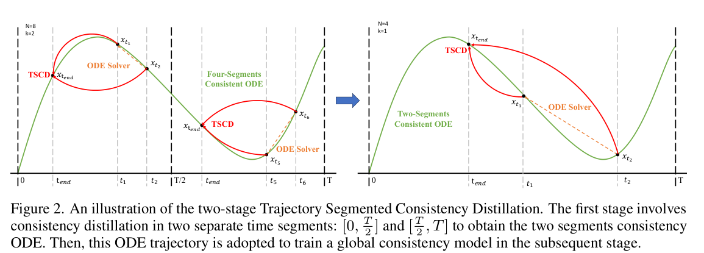
| 条件 | 指标 | 基线 | 结果 | 差值 |
|---|---|---|---|---|
| 同表SDXL-Lightning→Hyper-SDXL，1024²；作者统一评价 v3 Table 2，PDF文件第7页 ↗ | COCO-5k，SDXL 4步LoRA | 对应对照与变化见结果栏 | ImageReward 0.72→0.93（+0.21）；CLIP 32.40→32.56 | — |
| TCD→TSCD；用于判断分段训练贡献，不把完整框架全部收益归给单一模块 v3 Table 3，PDF文件第9页 ↗ | TSCD消融，2步，无人类反馈 | 对应对照与变化见结果栏 | ImageReward 0.29→0.64；CLIP 32.36→32.49 | — |
原图Figure2仅解释分段合并。审美反馈可能改变输出偏好；4步与一步、LoRA与整UNet必须分开。CLIP等提升不等价于真实“春日”字符准确率或端到端秒数提升。
将弯曲教师轨迹分成四个时间窗，各窗做局部reflow；保留真实数据监督与可插拔权重差。
| 条件 | 指标 | 基线 | 结果 | 差值 |
|---|---|---|---|---|
| SDXL-Lightning→PeRFlow；1024²，共10k生成图，对COCO验证分布评价 v5 Table 1b，PDF文件第7页 ↗ | SDXL 4步，COCO2014 FID↓ | 对应对照与变化见结果栏 | 22.86→18.48（−4.38） | — |
| 同表同评价；PeRFlow自身4步18.48反而优于8步19.21，更多步不保证全部指标单调改善 v5 Table 1b，PDF文件第7页 ↗ | SDXL 8步，COCO2014 FID↓ | 对应对照与变化见结果栏 | 20.44→19.21（−1.23） | — |
原文同时对训练分布、COCO、教师生成分布计算FID，三列含义不同。四步是去噪步数；有CFG时不能直接当四次单路前向或按教师步数相除得到秒级加速。
把只能回到干净图的一致性映射扩展为任意起止时间的连续flow map。

作者原图，v1，PDF文件第2页。仅裁切周围正文，未重绘。原文该页 ↗
| 条件 | 指标 | 基线 | 结果 | 差值 |
|---|---|---|---|---|
| 同一非对抗AYF-S模型增加采样评估数；类别条件生成 v1 Table 2，PDF文件第8页 ↗ | ImageNet512，AYF-S 280M，FID↓ | — | 1NFE 3.32；2NFE 1.87；4NFE 1.70 | — |
| AYF-S→AYF-S+adv；同表同280M，不能把额外对抗训练说成无训练改进 v1 Table 2，PDF文件第8页 ↗ | 对抗项消融，ImageNet512，1NFE | 对应对照与变化见结果栏 | FID 3.32→1.92（−1.40） | — |
类别条件证据支持连续映射机制，不证明复杂T2I字符能力。表中采样耗时没有在本条补齐硬件，故只引用FID/NFE；额外对抗训练可能改变分布。
分类补注：Calibri是黑盒标量对齐，可改善同质量下的NFE；与轨迹蒸馏分开理解。
冻结DiT主权重，仅搜索少量残差缩放和输出系数，让少步配置更适配评价目标。
| 条件 | 指标 | 基线 | 结果 | 差值 |
|---|---|---|---|---|
| 原配置→Calibri；NFE减半，非同硬件实测时延减半 v2 Table 2，PDF文件第6页 ↗ | FLUX，低预算校准 | 对应对照与变化见结果栏 | 30NFE HPS11.41→15NFE HPS13.48；ImageReward1.15→1.18 | — |
| 同文减少采样预算的配置；仅说明作者任务/奖励下的质量预算权衡 v2 Table 2，PDF文件第6页 ↗ | SD3.5 Medium | 对应对照与变化见结果栏 | 80NFE HPS11.15→30NFE HPS14.10；ImageReward1.10→1.17 | — |
校准需要搜索数据、奖励模型与生成开销。NFE改变与缩放共同变化，表2不能单独隔离“缩放”因果贡献；少步比例也不能当完整出图秒数比例。
同一路径的不同噪声状态指向同一端点。
让同一PF-ODE轨迹不同噪声位置输出相同干净端点，以一/少次前向生成。
| 条件 | 指标 | 基线 | 结果 | 差值 |
|---|---|---|---|---|
| CIFAR10，32²；同一作者自训练EDM教师；CD对PD重跑；LPIPS为最佳CD配置；训练A100集群，未报本表推理时延 Table1；§6.2；AppendixC，官方v1 HTML ↗ | FID ↓，1NFE | PD：8.34 | CD：3.55 | −4.79；同NFE质量对照 |
| 同CIFAR与EDM教师对照；2NFE Table1，官方v1 HTML ↗ | FID ↓ | PD：5.58 | CD：2.93 | −2.65；CT同表2NFE为5.83，非2.93 |
PDF超抓取大小，核验官方固定v1 HTML，未臆造物理页码。原生实验不能直接说明1024²中文海报质量；NFE相同也需相同硬件与batch才能比较延迟。
§3–5；Algorithm1；Table1；§6.2，官方v1 HTML ↗
在latent空间蒸馏含CFG的ODE端点，并跨k个时刻训练一致性。
| 条件 | 指标 | 基线 | 结果 | 差值 |
|---|---|---|---|---|
| SD2.1-base教师；LAION-Aesthetics6+；512²；10k测试prompt×3图；ω8；均4采样步，CFG工作量不同；本表不报统一时延 Table1；§5.1，官方v1 HTML ↗ | FID ↓；CLIP ViT-g/14 ↑ | DPM++：18.43；26.64 | LCM：11.10；28.69 | FID−7.33；CLIP+2.05；非等NFE时延证明 |
| SD2.1教师；LAION-Aesthetics6.5+；768²；同ω8、4采样步；LCM训练100k iterations，batch16 Table2；§5.1，官方v1 HTML ↗ | FID ↓；CLIP ↑ | DPM++：20.08；27.26 | LCM：13.53；28.60 | FID−6.55；CLIP+1.34 |
蒸馏需要训练；本表DPM++保留CFG双分支，LCM已蒸馏guidance，不能只按步数当作等计算。PDF过大改用固定v1 HTML，未补造页码。
§4.2–4.3；Tables1–2；§5.1，官方v1 HTML ↗
修正一致性训练的目标网络与噪声采样，直接学一至两步生成。
| 条件 | 指标 | 基线 | 结果 | 差值 |
|---|---|---|---|---|
| 无条件；1 NFE；CT使用LPIPS、iCT改用Pseudo-Huber；deep额外增加网络深度 v1 Table 2（作者HTML） ↗ | CIFAR10 FID ↓ | CT：8.70 | iCT：2.83；iCT-deep：2.51 | 同基础iCT对CT −5.87 |
| 同表；2 NFE；不可外推1024²文字海报 v1 Table 2 ↗ | CIFAR10 FID ↓ | CT：5.83 | iCT：2.46；iCT-deep：2.24 | 同基础iCT −3.37 |
去掉的是训练目标网络的EMA，并非禁止评估参数EMA；低分辨率类别/无条件结果不证明高分辨率中文正确率。
v1 §3.1–3.5、Figure 2、Table 2（作者HTML） ↗
用低秩适配蒸馏一致性映射，支持少步与风格组合。
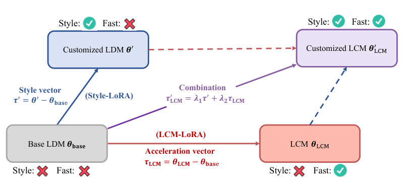
作者原图，v1，PDF文件第1页。仅裁切周围正文，未重绘。原文该页 ↗
| 条件 | 指标 | 基线 | 结果 | 差值 |
|---|---|---|---|---|
| 原论文LoRA与全参数模型规格；质量由Figure2四步样本展示 v1 Table1、Figure2，PDF第4页 ↗ | 蒸馏可训练参数↓ | 对应全参数0.98B / 3.5B | SD1.5：67.5M；SDXL：197M | — |
| SDXL-Lightning论文COCO前10K提示；4步LCM-LoRA，外部评测非本论文原指标 SDXL-Lightning Table2，PDF第8页 ↗ | 外部量化评测FID-Whole↓ | — | 21.50 | — |
原论文主要给4步定性示例和参数规格；后续基准用于补充质量证据。风格LoRA叠加仍可能发生能力干扰。
v1 §3.1–3.2、Figure2、Table1，PDF第4页 ↗
把既有流模型转成连续一致性学生，并补对抗细节。
| 条件 | 指标 | 基线 | 结果 | 差值 |
|---|---|---|---|---|
| SANA-Sprint0.6B、1步；A100 BF16，latency batch1 v4 Table2，PDF第7页 ↗ | 单图时延↓ / FID↓ / GenEval↑ | SANA0.6B20步：0.9s / 5.81 / 0.64 | 0.21s / 7.04 / 0.72 | — |
| 同0.6B模型系列，评估FID与组合遵从的取舍 v4 Table2，PDF第7页 ↗ | 4步质量/时延 | — | 0.32s / FID6.48 / GenEval0.76 | — |
GenEval上升而FID变差，表明“保持质量”需要拆指标。总速度还受AE、文本编码与编译影响，不能只按20/1声称20倍端到端。
改为直接学习区间映射，而非只学瞬时速度。
原生学习区间平均速度，一次跨完整生成路径。
| 条件 | 指标 | 基线 | 结果 | 差值 |
|---|---|---|---|---|
| 从头训练；类别条件图像生成，非1024²文生图蒸馏 v1 摘要；实验 ↗ | ImageNet256 1-NFE FID↓ | — | 3.43 | — |
原生单步并非免费获得；训练、模型规模和条件范围仍要比较。Hunyuan等报告把MeanFlow思想用于蒸馏时，也不能把它当成原论文同一实验。
一个网络用正时间表示真实数据流、负时间表示自身生成流，通过速度差做自对抗纠正。

作者原图，v2，PDF文件第3页。仅裁切周围正文，未重绘。原文该页 ↗
| 条件 | 指标 | 基线 | 结果 | 差值 |
|---|---|---|---|---|
| RCGM→TwinFlow；同表一步评价；教师50×2NFE GenEval0.87、DPG88.32 v2 Table 2，PDF文件第8页 ↗ | Qwen-Image 20B LoRA，1NFE | 对应对照与变化见结果栏 | GenEval 0.52→0.86；DPG 59.50→86.52 | — |
| RCGM→TwinFlow；吞吐batch10，时延batch1。相同部署预算提高质量，非再次加速 v2 Table 4，PDF文件第10页 ↗ | 0.6B单A100 BF16，1NFE | 对应对照与变化见结果栏 | GenEval 0.80→0.83；两者7.30样本/s、0.23s | — |
一步Qwen仍有WISE/DPG与教师差距。0.6B与20B结果不可交叉组装；训练含真实数据和预训练初始化。更少辅助网络不等于训练无需资源。
给MeanFlow选对文本表示，并加上起止时间条件，将类别条件一步生成扩展到文本。
| 条件 | 指标 | 基线 | 结果 | 差值 |
|---|---|---|---|---|
| 原少步采样→EMF；同一底座规模，MeanFlow适配后的一步结果 v1 Table 3，PDF文件第7页 ↗ | BLIP3o-NEXT 3B，同1步，GenEval | 对应对照与变化见结果栏 | 0.46→0.74（+0.28） | — |
| 原少步→EMF；仍未超过完整30步教师，避免用一步标题暗示完全无损 v1 Table 3，PDF文件第7页 ↗ | 同4步，GenEval | 对应对照与变化见结果栏 | 0.86→0.90（+0.04）；原30步0.91 | — |
文本表示分析是论文的机制解释，不等于已严格因果拆开全部训练差异。GenEval并非汉字OCR指标；本文没有据此证明海报“春日”正确率。
score差、对抗监督和噪声安排决定训练方向。
对齐学生输出分布，并用配对回归稳住结构。
| 条件 | 指标 | 基线 | 结果 | 差值 |
|---|---|---|---|---|
| 类别条件与零样本文生图是两套独立实验 v1 摘要、§5 ↗ | 1-NFE FID↓ | — | ImageNet64：2.62；COCO2014-30k：11.49 | — |
不能把64²类别生成FID与1024²文生图FID比较。作者20fps概述缺少本表一致硬件信息，本版不把它作为可复用部署时延。
渐进轨迹压缩，加对抗目标保留高分辨率细节。
| 条件 | 指标 | 基线 | 结果 | 差值 |
|---|---|---|---|---|
| COCO验证前10K提示；4步完整模型，原论文高分辨率评测 Table2，PDF第8页 ↗ | FID-Whole↓ / FID-Patch↓ | 4步LCM-LoRA：21.50 / 40.38 | 22.30 / 33.52 | — |
| 同表8步完整模型 Table2，PDF第8页 ↗ | 8步FID-Whole↓ / FID-Patch↓ | SDXL32步：18.49 / 35.89 | 21.43 / 33.55 | — |
Patch-FID改善但Whole-FID未胜原SDXL，不能说所有质量都超过教师。本地PDF无可识别版本水印，文件SHA-256在source manifest锁定，未猜版本号。
两时间尺度稳定score，再去掉回归并加入GAN。
| 条件 | 指标 | 基线 | 结果 | 差值 |
|---|---|---|---|---|
| 同论文Table1；长训增益与算法基本配置分开 v1 Table1 ↗ | ImageNet64 1-NFE FID↓ | DMD2.62 | 1.51；延长训练1.28 | 基本配置−1.11；长训−1.34 |
| 论文独立文生图实验；条件见§5 v1 摘要、§5 ↗ | COCO2014零样本FID↓ | — | 8.35 | — |
教师EDM-ODE在该表FID2.32，EDM-SDE为1.36；DMD2基本配置1.51并未胜过所有教师采样器。
按噪声阶段分配分布匹配与对抗监督，以独立score网络降低蒸馏训练开销，再交替进行奖励优化。
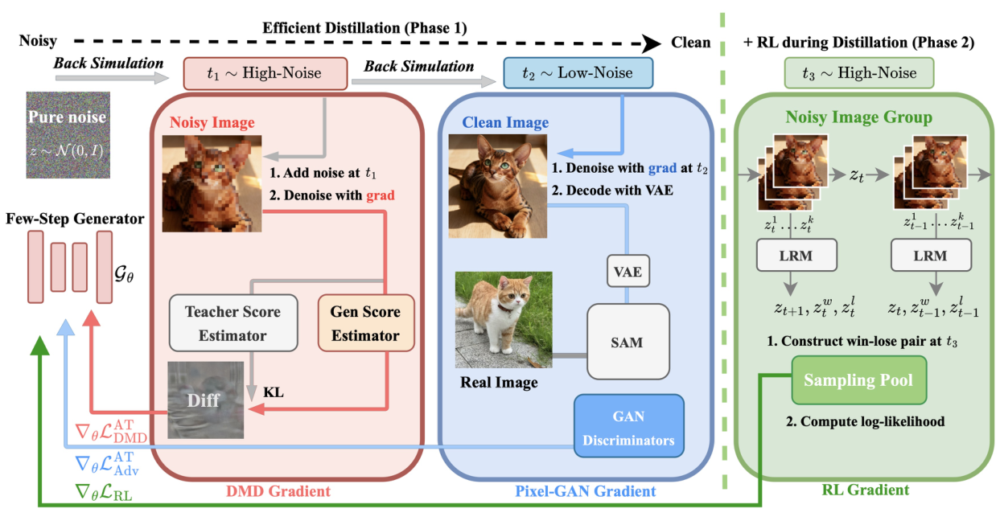
作者原图，v1，PDF文件第3页。仅裁切周围正文，未重绘。原文该页 ↗
| 条件 | 指标 | 基线 | 结果 | 差值 |
|---|---|---|---|---|
| DMD2→Flash-DMD TTUR1-1k；同表4NFE评价 v1 Table 1，PDF文件第7页 ↗ | SDXL 4NFE，COCO-10k | 对应对照与变化见结果栏 | ImageReward 0.8748→0.9509；CLIP 0.3302→0.3292（下降） | — |
| 作者以batch×迭代表示训练成本；不是实测同硬件GPU小时或推理时间比例 v1 Table 1，PDF文件第7页 ↗ | 训练量代理 | 对应对照与变化见结果栏 | 128×24k→64×1k，约2.1% | — |
CLIP有轻微回退；第二阶段不同RL比例也存在HPS权衡。Hyper-SD的A100小时与本文H20小时不可直接作严格训练加速比；不能把训练采样量降低98%写成出图快98%。
拆开DMD的CFG推动项与分布纠偏项，分别选择重新加噪范围。
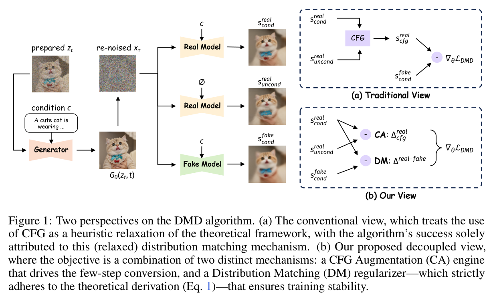
| 条件 | 指标 | 基线 | 结果 | 差值 |
|---|---|---|---|---|
| SDXL；COCO2014-val 10K；严格沿用DMD2训练配置及GAN，仅替换re-noising安排 v1 Table 2，PDF第9页 ↗ | FID ↓；CLIP-S ↑ | DMD2四步：18.95；33.14 | Decoupled：17.80；33.62 | FID −1.15；CLIP +.48 |
| 同表；保留不利指标，避免“全指标更优” v1 Table 2 ↗ | HPSv2.1 ↑ | DMD2：30.64 | Decoupled：30.34 | −.30 |
| Lumina-Image2；四步；只独立采样不能复现收益 v1 Table 1，PDF第8页 ↗ | DPG Overall ↑ | 共享全局噪声：83.90；独立全局：83.77 | 独立混合范围：85.85 | 对共享 +1.95 |
“CFG是引擎”是作者在已测试模型中的解释，不升级为所有蒸馏方法定理；沿用GAN后消融更有可比性。
v1 Eq.6 PDF第4页；Table 1–2 PDF第8–9页 ↗
少步可能牺牲多样性；训练分配和正则各不同。
将分布匹配分成噪声阶段，并为中间分布推导正确的子区间score目标。
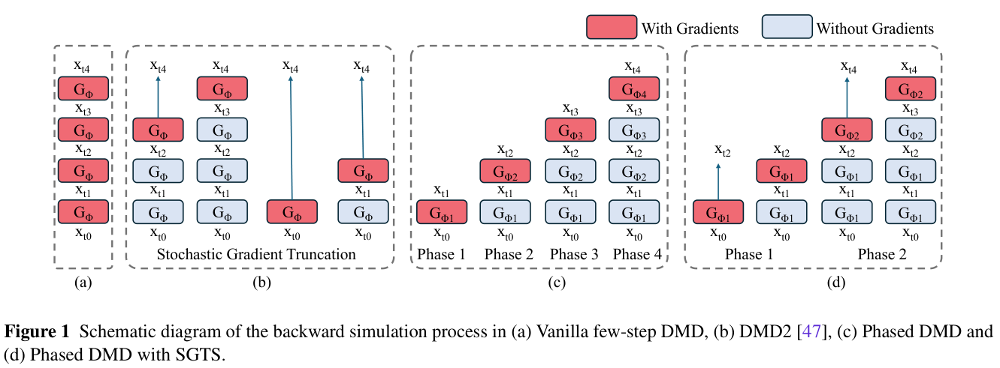
| 条件 | 指标 | 基线 | 结果 | 差值 |
|---|---|---|---|---|
| DMD2→Phased DMD；21短提示×8种子；蒸馏模型4步CFG1，720×1280 v3 Table 3，PDF文件第10页 ↗ | 图像多样性，Wan2.1 4步 | 对应对照与变化见结果栏 | DINO余弦↓ 0.826→0.782；LPIPS距离↑ 0.521→0.544 | — |
| 同21提示×8种子，1382²；两个多样性指标方向并不一致 v3 Table 3，PDF文件第10页 ↗ | 反例：Qwen-Image 4步 | 对应对照与变化见结果栏 | DINO余弦↓ 0.941→0.958（变差）；LPIPS↑ 0.309→0.322 | — |
新增阶段专家增加总参数；必须与同专家数基线分开看。Qwen结果不支持“全部模型多样性均更优”。DINO此处为余弦相似度↓，与DP-DMD的DINO多样性↑不能直接合并。
冻结大模型，用高/低噪声专用Slow-Fast LoRA，以极少样本学习非均匀跳步。
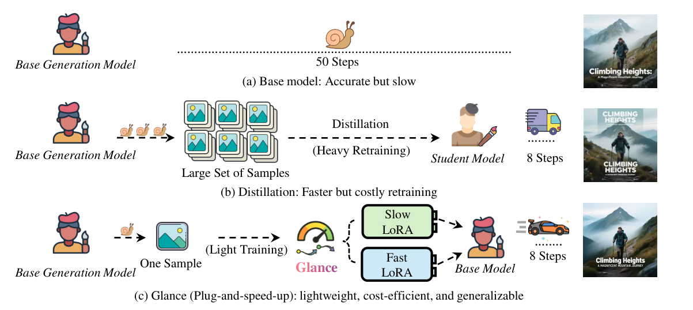
作者原图，v2，PDF文件第2页。仅裁切周围正文，未重绘。原文该页 ↗
| 条件 | 指标 | 基线 | 结果 | 差值 |
|---|---|---|---|---|
| 直接降步Qwen→Glance；1024²评价，学生训练仅1样本；Table2 v2 Table 2，PDF文件第4页 ↗ | Qwen-Image，相同10×2NFE，OneIG | 对应对照与变化见结果栏 | Alignment 0.802→0.868；Text 0.693→0.734 | — |
| 同底座，少步仍损失分布质量；不能把“接近”写成全部指标无损 v2 Table 1，PDF文件第4页 ↗ | FLUX少步质量取舍，COCO-10k FID↓ | — | 原50NFE 27.8；Glance 8NFE 34.2；10NFE 30.4 | — |
| Qwen-Image；1024²；COCO2014val10k captions；同一模型10×2NFE；只比较质量，GPU延迟未在该表提供 Table 1，PDF 第4页；协议第5页 ↗ | FID ↓；CLIP ↑；VQA ↑ | 未适配Qwen10×2：39.1；0.265；0.918 | Glance10×2：37.8；0.280；0.932 | FID−1.3；CLIP+0.015；VQA+0.014 |
| Qwen-Image；OneIG1120prompts；教师50×2NFE对Glance10×2；训练1图、0.8GPU-hour（论文表计） Table 2，PDF 第4页 ↗ | Alignment ↑；Text ↑；Reasoning ↑ | 教师：0.880；0.888；0.306 | Glance：0.868；0.734；0.303 | Alignment−0.012；Text−0.154；Reasoning−0.003；不能宣称文字无损 |
| Qwen；Slow3–Fast5与单LoRA相同采样时刻；OneIG消融；不要与主表其他配置混成同实验 Table 3，PDF 第7页 ↗ | Alignment ↑；Text ↑ | Single identical：0.702；0.453 | Slow3–Fast5：0.849；0.614 | 阶段专家增加+0.147；+0.161；仍需关注主表配置差异 |
少样本不是数据自由；10×2NFE不是10次前向。原文曲线/描述中的“nearly same”需与表中FID退化一起呈现；训练GPU小时不代表推理端到端加速。
首步保留教师的分支与构图映射，后续步继续DMD提质，并隔离后段梯度。
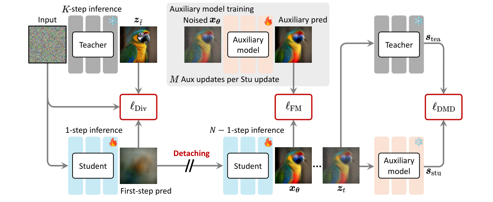
作者原图，v2，PDF文件第4页。仅裁切周围正文，未重绘。原文该页 ↗
| 条件 | 指标 | 基线 | 结果 | 差值 |
|---|---|---|---|---|
| DMD→DP-DMD；同底座、同4NFE、CFG3.5；提升多样性同时偏好分回退 v2 Table 1，PDF文件第6页 ↗ | SD3.5M，COCO2014-10k，4NFE | 对应对照与变化见结果栏 | DINO多样性↑ 0.210→0.250；ImageReward 1.053→0.988（下降） | — |
| DMD→DP-DMD；提升方向与SD3.5M不同，不能断言质量必然升或必然降 v2 Table 1，PDF文件第6页 ↗ | SDXL同4NFE对照 | 对应对照与变化见结果栏 | DINO多样性 0.139→0.204；ImageReward 0.712→0.835 | — |
DINO此处是多样性距离↑，不能与Phased-DMD余弦相似度↓直接并列成统一排行。表2其他开源学生不是严格控制实验；“保留多样性”不等于逐像素保留教师输出。
在固定离散锚点之外补连续时间与离轨迹监督，避免换步数或小扰动后失稳。

读图顺序：先看顶部动态时间锚点，再看下部CA、DM和离轨迹CDM三类监督。颜色区分训练信号，不能从图推断推理额外运行三套网络。
上方动态时间锚点，下方 CA、DM 与离轨迹 CDM 三类监督，保留原文完整图例。 作者原图4；固定版本v1；PDF文件第5页。可点击放大。 固定版本PDF该页 ↗| 条件 | 指标 | 基线 | 结果 | 差值 |
|---|---|---|---|---|
| D-DMD*→CDM；PickScore测试2k提示，DPG约1k提示；作者统一评价 v1 Table 1，PDF文件第8页 ↗ | SD3-Medium 1024²，4NFE | 对应对照与变化见结果栏 | HPSv3 9.176→9.561（+0.385）；DPG84.52→85.26（+0.74） | — |
| 同表教师/学生并非所有能力均改善；HPSv3高不代表文本对齐处处更强 v1 Table 1，PDF文件第8页 ↗ | 与100NFE教师的边界 | — | CLIP教师28.60；CDM 4NFE 27.98 | — |
连续时间与离轨迹训练增加训练工作；本条无同硬件端到端秒数。Table1多评价器存在取舍；不能从HPSv3一项推出无损蒸馏。
一次前向同时预测多个连续时间区间的平均速度，按块推进轨迹。
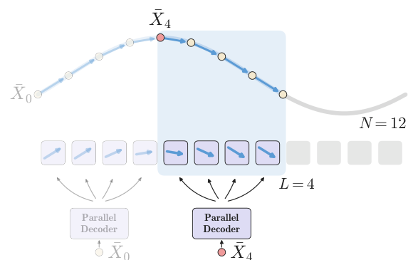
作者原图，v1，PDF文件第2页。仅裁切周围正文，未重绘。原文该页 ↗
| 条件 | 指标 | 基线 | 结果 | 差值 |
|---|---|---|---|---|
| 作者统一重测检查点；DMD2*=Lightning step4 v2；OneIG-EN0.524→0.538 v1 Table 3，PDF文件第8页 ↗ | Qwen-Image，同4NFE，GenEval/DPG | 对应对照与变化见结果栏 | DMD2* 0.85/88.25→PDD-Midpoint0.86/88.66 | — |
| DMD2→PDD-Midpoint；Pick22.98→22.86。保留多样性并非偏好指标全部更高 v1 Table 4，PDF文件第8页 ↗ | 同4NFE，多样性/偏好权衡 | 对应对照与变化见结果栏 | OneIG多样性0.095→0.174；HPSv2 32.34→31.33（下降） | — |
平均速度并行预测与LLM投机解码不是同一种验证机制。Qwen主表为2/4/8NFE；不得拿ImageNet的一步结论替代Qwen一步结果。质量与多样性评价分开。
文字、编辑与审美来自不同监督和阶段。
技术报告将实例轨迹、单路CFG蒸馏、统一噪声参照和量化算子组合到图像编辑链路。
| 条件 | 指标 | 基线 | 结果 | 差值 |
|---|---|---|---|---|
| 明确排除VLM阶段；蒸馏+量化组合；该节未给可复现实测硬件/并发/逐模块消融 v2 §3.5.2，PDF文件第9页 ↗ | 编辑扩散链路，作者报告组合时延 | 对应对照与变化见结果栏 | 约64s→8s（8×） | — |
| 两次网络评估→一次有guidance嵌入的评估；不是完整编辑工作流实测2× v2 §3.5.1，PDF文件第8页 ↗ | 单路CFG蒸馏，作者机制级估计 | — | 约2×该部分推理 | — |
原文称8דend-to-end”但同句排除VLM，正文必须采用“排除VLM的扩散链路”口径。实际步数、量化位宽、GPU和并发未在该段详列；不能据此做跨模型速度排行或把8×全部归给量化。
D-DMD拆开引导与正则，再用DMDR整合奖励。
| 条件 | 指标 | 基线 | 结果 | 差值 |
|---|---|---|---|---|
| 报告用语不同：steps与NFE需保留区别；图示比较细节与颜色 v5 §4.5、Figure13，PDF第20–22页 ↗ | 调用/步数规格 | — | 8步Turbo；原SFT教师约100 NFE | — |
| 作者定性分阶段图示，未转录成虚构数值 v5 Figure13，PDF第21页 ↗ | 消融证据 | — | DMD→D-DMD→D-DMD+DMDR依次展示细节、颜色与偏好改善 | — |
所谓亚秒推理还依赖FlashAttention3与torch.compile等指定条件（报告第9页脚注），不能只由8步保证。
v5 §4.5.1–4.5.3、Figure13，PDF第20–22页 ↗
统一生成编辑基模中的4-NFE蒸馏章节。
| 条件 | 指标 | 基线 | 结果 | 差值 |
|---|---|---|---|---|
| 作者跨提示定性对比；非严格同噪声/同预算用户试验 v1 Figure11，PDF第17页 ↗ | 采样预算 | — | 4 NFE学生，对照40采样步RL教师 | — |
教师40步在CFG下可能对应更多NFE，不能把40/4当作严格网络加速或端到端倍数。
按步骤调教师，联合配比决定少步能力保留。
| 条件 | 指标 | 基线 | 结果 | 差值 |
|---|---|---|---|---|
| 4-NFE学生；内部基准风景/人物/文字，VLM评分 v3 Table2，PDF第7页 ↗ | T2I-Bench平均分↑ | 80-NFE Base：3.41 / 4.09 | Gemini3.1Pro：3.56；GPT5.5：4.15 | — |
| portrait-only20K训练，Gemini3.1Pro评文字场景；相同2000iter协议 v3 Table1，PDF第5页 ↗ | 数据消融：文字分项↑ | text-centric20K训练：1.97 | 3.12 | +1.15分 |
| 同Table2，同评分器；保留反向结果 v3 Table2，PDF第7页 ↗ | 对RL教师的差距 | 80-NFE RL：3.74 / 4.26 | 3.56 / 4.15 | — |
学生超过Base但低于RL教师总体分；不能写成无条件超过教师。内部VLM分数也不等于人工逐字正确率。
v3 §4.2–4.4、Table1–3，PDF第4–8页 ↗
完整技术报告把四步Turbo、CFG批合并与轻量VAE作为不同成本项分别优化。
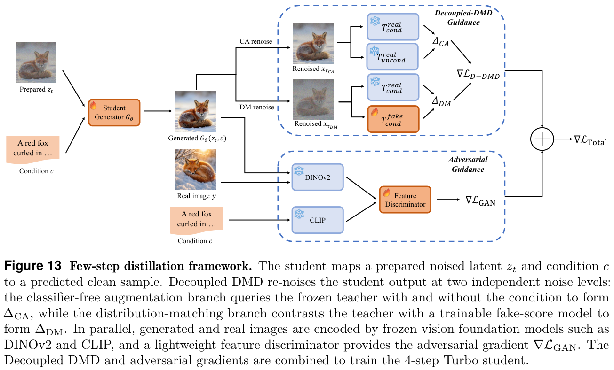
| 条件 | 指标 | 基线 | 结果 | 差值 |
|---|---|---|---|---|
| 同模型、同轨迹，separate→packed CFG；硬件与步数均在Table3列明 v2 Table 3，PDF文件第13页 ↗ | Packed CFG，单NVIDIA A100 | 对应对照与变化见结果栏 | Base30步7.5089→6.5159s（1.15×）；Mage-Flow20步5.0076→4.3680s | — |
| 无Adv→有Adv；Text-to-image，Table6a；LongText-CN0.783→0.801。非所有指标一致升 v2 Table 6a，PDF文件第23页 ↗ | 4步Turbo感知对抗消融 | 对应对照与变化见结果栏 | TIIF-Short80.99→83.58；GenEval0.89→0.88（下降） | — |
VAE的MACs降幅不等于端到端时延降幅；packed-CFG是双路批执行，与SeedEdit的单路CFG蒸馏不同。4步对抗项对通用编辑的收益也不是统一为正，图文/编辑评价应分开。
轨迹、CFG、量化和提示处理共同进入配方。
CFG嵌入、分段一致性与低位宽内核作为整套出图配方。
| 条件 | 指标 | 基线 | 结果 | 差值 |
|---|---|---|---|---|
| §6.2算子级报告；未给统一硬件/完整端到端消融 v1 §6.2，PDF第18页 ↗ | 算子性能改善 ↑ | 融合/调优前的对应算子 | 作者报告5%–20% | — |
| 这是训练课程，不代表已实测每张图16→1步或16×延迟 v1 §6.1，PDF第17页 ↗ | 训练分段数 | k=16 | 16→8→4→2→1 | — |
没有各组件独立端到端对照，不能将5%–20%算子收益累乘。保留为技术报告配方证据。
调整样本生成轨迹与统一噪声期望，稳定少步采样。
| 条件 | 指标 | 基线 | 结果 | 差值 |
|---|---|---|---|---|
| §1产品报告；硬件、batch与阶段独立消融未披露 v3 §1，PDF第4页 ↗ | 1K出图时间 ↓ | 本段未给同硬件旧版对照 | 作者报告3.0s，不含PE | — |
| 仅§2.4的文字性主张；不虚构百分比 v3 §2.4，PDF第7–8页 ↗ | 少步质量对照 | 50 NFE基线 | 作者描述若干维度匹配或超越；该节未给少步NFE和数值表 | — |
3秒排除了提示词处理PE；少步预算与硬件不足，无法归因到某个组件。重要性采样加快训练，另行记账。
ADP初始化再ADM分布对齐，并联动VAE、混合量化与PE投机。
| 条件 | 指标 | 基线 | 结果 | 差值 |
|---|---|---|---|---|
| §1明确“measured by compute flops”；不是同硬件端到端延迟表 v3 §1，PDF第4页 ↗ | 架构训练/推理FLOPs ↓ | Seedream3架构 | 报告超过10× FLOPs改善 | — |
| §2.3定性配方；未给每项独立延迟/质量消融 v3 §2.3，PDF第6页 ↗ | 混合数值位宽 | 全精度对应算子 | 自适应4/8bit | — |
超过10×的明确度量是FLOPs。PE投机是整条产品链路的旁支；不可说扩散潜变量用了同样拒绝采样。
少步成果应同时记教师/学生版本、训练目标、任务配比、CFG与NFE。8步只是一个预算点，真正目标是同交付质量下缩短等待。
先用 reflow 改善噪声与图像的配对和路径，再蒸馏成一步映射。
适用边界需要后训练与教师配对；旧SD的512²结果不等于现代高分辨率文字、编辑能力。原图3流程已从原文图注核对；本轮未取得可裁取PDF，提供原文入口。
图3：比较上方直接蒸馏失败路径与下方 reflow→蒸馏路径。关键是先改变噪声—图像配对；图中的直线是机制示意，不能据此证明训练误差为零。
未嵌入作者图。图注/相关方法已读；PDF下载未完成或版本未确认。请从上方原文入口查看，不以自绘图代替。
用对抗损失维持真实感，用冻结扩散教师的蒸馏信号维持语义与组合能力。
适用边界真实性、覆盖度与对齐需分别评测。不能把1–4步解释为无条件适用于任何基座；不把训练损失模块算入部署推理成本。原图2可在固定版本查看；本地缺图。
图2：从学生输出分两路看，判别器检查真实感，冻结教师检查加噪后去噪的一致性；虚线/梯度停止体现谁被更新。两条监督路径都在训练端。
未嵌入作者图。图注/相关方法已读；PDF下载未完成或版本未确认。请从上方原文入口查看，不以自绘图代替。
把判别特征与训练目标移到潜空间，让大模型的少步对抗蒸馏更易扩展到高分辨率。
适用边界减少训练期解码和判别开销，不等于部署时取消VAE；训练效率与出图延迟分开。不是简单将ADD所有损失搬入latent。原图3已核图注与方法；本地缺图。
图3：上两行ADD经过像素解码和DINOv2；下行LADD直接使用教师的latent特征。先比较数据流，再找被取消的解码环节，最后区分训练路径与最终出图路径。
未嵌入作者图。图注/相关方法已读；PDF下载未完成或版本未确认。请从上方原文入口查看，不以自绘图代替。
问题 02
时刻、积分公式和每步引导次数，应分别记账。
已有模型定义一条去噪ODE，最简单的Euler每次只用当前斜率，大步就容易走偏。高阶求解器用历史或预测信息更准确地近似积分，在相同网络评估数下减少误差。
这类方法不重新训练生成器，容易作为基线部署；但不能假设原模型在1步时已学会跨完整路径。强引导、极少NFE或不合适时间网格，都会限制收益。
图中展示 4 项代表，本章正文保留全部 6 项。
优化积分与时刻；同权重比较真实评估次数。
保持去噪网络，改用非Markov前向族导出的确定性更新，在稀疏时刻上采样。
| 条件 | 指标 | 基线 | 结果 | 差值 |
|---|---|---|---|---|
| CIFAR10，32²；同一T1000训练模型；S20；仅改η；质量比较，未绑定本行GPU时延 Table1，PDF第6页；§5设置第5页 ↗ | FID ↓ | η1：18.36 | η0 DDIM：6.84 | −11.52 |
| CelebA，64²；同一模型、S20；仅改η Table1，PDF第6页 ↗ | FID ↓ | η1：26.03 | η0：13.73 | −12.30；同调用预算改善，不是延迟加速比 |
复用网络不等于任意跨步都无损；本表证据不能直接证明1024²文生图能力或全管线加速。
解析处理扩散ODE线性项，高阶近似剩余积分。
| 条件 | 指标 | 基线 | 结果 | 差值 |
|---|---|---|---|---|
| 原论文CIFAR10实验；不可直接外推高分辨率文生图时延 v1 摘要、实验 ↗ | CIFAR10 FID↓ | — | 10 NFE：4.70；20 NFE：2.87 | — |
同权重免训不代表任何少步预算都无损；CFG与不同模型参数化要用匹配的求解器实现。
以数据预测和多步更新稳定强引导下的少次求解。
| 条件 | 指标 | 基线 | 结果 | 差值 |
|---|---|---|---|---|
| ImageNet256；同离散预训练模型；classifier guidance=8；无 thresholding；20 NFE v1 Appendix C / Table 3 ↗ | FID ↓ | DDIM：10.21；DPM-Solver-2：20.33 | DPM-Solver++(M)：9.10 | 对DDIM −1.11 |
| 同设置；10 NFE；保留超低预算反例 v1 Table 3 ↗ | FID ↓ | DDIM：13.04 | DPM-Solver++(M)：14.44 | +1.40，反而较差 |
同 NFE 的质量收益不等于对应比例时延；最少10次评估时该多步配置未胜DDIM。
v1 §3–4；Appendix C Table 3（作者HTML） ↗
统一高阶预测-校正，复用已有评估提升精度。
| 条件 | 指标 | 基线 | 结果 | 差值 |
|---|---|---|---|---|
| 两套独立数据/任务；本版不直接计算对DPM-Solver摘要数值的提升 v1 摘要；实验 ↗ | 10-NFE FID↓ | — | CIFAR10无条件3.87；ImageNet256类别条件7.51 | — |
CIFAR10与文生图的文本引导、分辨率和质量目标不同，论文数字不能作为海报的直接质量预测。
在固定求解器与模型下优化噪声时刻，把有限网络调用放到更合适的位置。
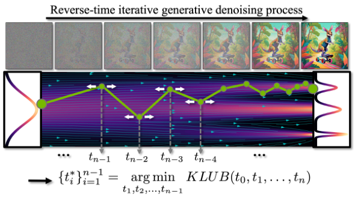
作者原图，v1，PDF文件第2页。仅裁切周围正文，未重绘。原文该页 ↗
| 条件 | 指标 | 基线 | 结果 | 差值 |
|---|---|---|---|---|
| ImageNet256；预训练 latent DM；CFG=2；SDE-DPM-Solver++(2M)；NFE=10；不使用动态阈值；本行比较质量，硬件不影响该指标口径 Table 1，PDF 第9页；设置第8页 ↗ | FID ↓ | Time-uniform：8.47 | AYS：6.11 | −2.36（约−27.9%） |
| 同数据/模型/CFG；确定性 DPM-Solver++(2M)；NFE=10 Table 1，PDF 第9页 ↗ | FID ↓ | LogSNR：4.82 | AYS：4.31 | −0.51 |
| 同数据/模型/CFG；ER-SDE-Solver3；NFE=10；保留反例 Table 1，PDF 第9页 ↗ | FID ↓ | Time-uniform：5.13 | AYS：5.28 | +0.15，质量略差；并非各求解器全部获益 |
优化时刻有离线计算成本，适配对象包含模型、求解器与 guidance；FID 改善不能写成同比例延迟加速。表中 ER-SDE-Solver3 的低步反例应保留。
Table 1，PDF 第9页；设置第8页；Table 1，PDF 第9页 ↗
训练时学入引导，推理只评估一次条件模型。
训练时把引导分布写进单个条件模型，推理去掉CFG双支。
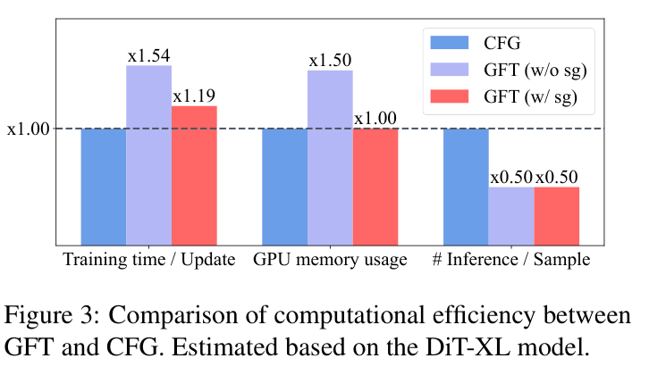
| 条件 | 指标 | 基线 | 结果 | 差值 |
|---|---|---|---|---|
| 同论文Table2；微调GFT；估算去噪评估成本减半不含固定管线 v2 Table 2，PDF第6页 ↗ | ImageNet256 FID ↓ | DiT-XL/2 + CFG：2.11 | +GFT免引导：1.99 | −0.12 |
| 零样本文生图；同Table3；保留小幅退化 v2 Table 3，PDF第6页 ↗ | COCO2014 FID ↓ | SD1.5 + CFG：7.87 | +GFT：8.10 | +0.23 |
Figure3的半数推理评估是估算；训练每步还有约19%附加时间。完整出图并非严格2×，COCO FID也略差。
v2 Algorithm 1 / Figure 3 PDF第4页；Table 2–3 PDF第6页 ↗
先用成熟求解器建立免训练基线，再决定是否值得蒸馏。连续ODE的方法不能直接套用到VAR尺度自回归或MaskGIT掩码轮次。
把求解器、噪声时刻、预条件和训练设计拆开；为步数与网络评估次数提供清晰基准。
适用边界证据等级：官方代码与摘要核验，论文方法和实验全文待补。CIFAR32²不是1024²文生图。原图缺失；不要将EDM视为只换scheduler就能复现全部收益。
暂无本地核验原图。建议回查论文Figure 2的NFE–FID曲线；不能把训练新模型的FID改进归给采样器。
未嵌入作者图。图注/相关方法已读；PDF下载未完成或版本未确认。请从上方原文入口查看，不以自绘图代替。
问题 03
重用、预测与自适应刷新是三种误差控制方式。
相邻去噪状态很接近，一些高层特征变化慢。每一步都完整执行同样主干有冗余；但简单拷贝旧特征会把过时语义带到新状态，误差可能逐步放大。
应同时问缓存什么、何时刷新、如何估计失效。U-Net的深浅分工、DiT特征变化趋势和轻量差异指标对应不同实现，不能把所有缓存写成一个固定“每隔N步跳过”开关。
图中展示 4 项代表，本章正文保留全部 6 项。
缓存层或局部token，但当前噪声仍持续更新。
缓存U-Net高层特征，跳过中间深层计算。
| 条件 | 指标 | 基线 | 结果 | 差值 |
|---|---|---|---|---|
| SD、512²、50步PLMS，N=5；单RTX2080 v1 Table3、§4.2 ↗ | COCO2017吞吐↑ / CLIP↑ | 原模型0.237图/s；30.30 | 0.500图/s；30.23 | 吞吐2.11×；CLIP−0.07 |
| 同表，同实现 v1 Table3 ↗ | PartiPrompts吞吐↑ / CLIP↑ | 原模型0.230图/s；29.51 | 0.494图/s；29.46 | 2.15×；CLIP−0.05 |
加速幅度受U-Net结构影响；Table3具体2.11–2.15倍比抽象“2.3倍”更适合保留条件。浅层更新与缓存都有消融，不是把网络中间层随便删掉。
按固定间隔重算DiT注意力与MLP，中间步骤复用。
| 条件 | 指标 | 基线 | 结果 | 差值 |
|---|---|---|---|---|
| ImageNet；DiT-XL/2；CFG1.5；250 DDIM；单A100 v1 Table 1，PDF第6页 ↗ | FID ↓；加速 ↑ | 250步无缓存：FID2.30；1× | N=3：FID2.82；2.80× | FID +0.52 |
| 相同设置；大间隔质量反例 v1 Table 1，PDF第6页 ↗ | FID ↓；加速 ↑ | 同一无缓存基线：2.30；1× | N=10：25.24；8.07× | FID +22.94 |
2.80×对应大量采样步的类别生成；不能当四步文生图的可叠加收益。
v1 §3、Table 1 PDF第6页；§4.3 PDF第8页 ↗
按区域变化只重算活跃 token，复用非活跃预测与 KV，并周期性全量刷新控制误差。
| 条件 | 指标 | 基线 | 结果 | 差值 |
|---|---|---|---|---|
| SD3；1024²；10k COCO caption-image对；单A10080GB测吞吐；注意正文§4.1写MSCOCO2017而Table2 caption写COCOVal2014，版本内不一致 Table 2，PDF 第6页 ↗ | 吞吐 ↑；FID ↓；CLIP ↑ | RFlow5步全量：1.43 image/s；39.70；29.84 | RAS7步、25%活跃：1.45 image/s；31.99；30.64 | 近似同吞吐时 FID−7.71、CLIP+0.80 |
| SD3；10步；平均12.5%活跃；误差重置消融 Table 4(a)，PDF 第8页 ↗ | FID ↓；CLIP ↑ | 去掉 error reset：46.10；30.41 | 完整 RAS：35.81；30.13 | reset使FID−10.29，但CLIP−0.28；不同质量指标存在取舍 |
| SD3；缓存 KV消融；分别比较28与10步，不能跨步合并 Table 4(b)，PDF 第8页 ↗ | FID ↓ | 无KV：28步31.36；10步32.33 | 有KV：28步24.30；10步35.81 | 28步改善−7.06，10步反而+3.48；不应宣称缓存各配置皆提升 |
这是近似计算，需控制活跃比例、dense step与缓存漂移。Table2的数据集年份与正文不一致，应带着这一原文缺口阅读；KV的10步反例表明消融结论不能写成无条件全优。
Table 2，PDF 第6页；Table 4(a)，PDF 第8页；Table 4(b)，PDF 第8页 ↗
预测变化、在线探针与目标校准控制误差。
从旧特征估计变化趋势，预测被跳过步骤。
| 条件 | 指标 | 基线 | 结果 | 差值 |
|---|---|---|---|---|
| FLUX.1-dev50步，N=6,O=1，启用efficient attention；硬件见原文实现 v1 Table1 ↗ | FLUX时延↓ / ImageReward↑ | 原17.20s / 0.9898 | 4.87s / 0.9953 | 实际时延3.53× |
| 同一Table1配置，避免把FLOPs比当速度 v1 Table1 ↗ | 计算减少与时延的区别 | — | FLOPs3719.50T→744.81T（4.99×）；时延仅3.53× | — |
论文4.99倍在这里是FLOPs减少，不是实际时延；不同阶数/间隔的质量与时延不能交叉挑选。
用浅层在线探针决定刷新，并对齐两次缓存的变化轨迹。
| 条件 | 指标 | 基线 | 结果 | 差值 |
|---|---|---|---|---|
| Flux.1.0-dev；A800 80GB；LAION5B抽1K提示；探针m=1、δ=.4；LPIPS对原输出 v1 §4.1、Table 1（作者HTML） ↗ | 单图时延 ↓；LPIPS ↓ | 无缓存：15.11s | DiCache：4.69s；LPIPS0.2704 | 3.22×；−10.42s |
| 同表同模型；LPIPS只是与原输出的差异 v1 Table 1 ↗ | 同条件时延/保真度 | TaylorSeer：4.83s；LPIPS0.4709 | DiCache：4.69s；LPIPS0.2704 | −0.14s；LPIPS −0.2005 |
本表多步Flux结果；低LPIPS表示接近原输出，不等于文本更正确。下篇四步反例显示不能直接移植。
v1 Algorithm 1、Eq.7–11、Table 1（作者HTML） ↗
先校准当前模型与求解器适合缓存的张量，再决定是否复用。
| 条件 | 指标 | 基线 | 结果 | 差值 |
|---|---|---|---|---|
| 同一四步权重/求解器；硬件未在正文披露；仅同论文比较 v1 Table 1，PDF第8页 ↗ | 单图时延 ↓ | FLUX.1-schnell四步：1.444s | AutoTarget：1.120s | cache-only 1.289×；不是16× |
| 同表；非四步Flux；硬件未报告；保留质量下降 v1 Table 1，PDF第8页 ↗ | 时延 ↓；ImageReward ↑ | PixArt-LCM四步：.158s；.443 | AutoTarget：.124s；.413 | 1.277×；ImageReward −.030 |
16×以另一个50步FLUX-dev模型为参照；缓存独立收益只有1.289×。结论限已校准设置，硬件缺失降低部署可比性。
v1 §3–4、Table 1 PDF第8页；Figure 5 PDF第16页 ↗
缓存不是总能叠加的固定倍数：少步模型每步变化更大，原来的慢变化假设可能失效。与蒸馏组合时必须重新扫刷新间隔和质量。
按生成阶段复用注意力输出，区分早期语义规划和后期细节改善。
适用边界门控和间隔需随基座与调度验证；并非任何DiT的文本表示都静态。原图2趋势是样本平均，不能证明每个prompt/层都不变。本地缺图。
图2：横轴去噪阶段、纵轴相邻注意力变化；阴影是方差。均值下降支持门控动机，却不意味着完全相同，更不等于精确KV缓存。
未嵌入作者图。图注/相关方法已读；PDF下载未完成或版本未确认。请从上方原文入口查看，不以自绘图代替。
问题 04
改变表示、合并相似位置，或保留必要的远程交互。
高分辨率让每步更贵，即使采样轮次已经很少，注意力、MLP和解码仍可能主导总时间。空间压缩从源头减少位置，token合并在现有网络内部省计算，稀疏/共享注意力再压缩交互。
三种方式的适用边界不同：深压缩通常需配套训练，免训合并依赖相似性，窗口化可能丢远程关系。红杯在蓝盒左侧这样的跨物体关系、小文字与局部细节都要保留检查。
除了注意力，还要看VAE压缩率、patch粒度、文本编码和解码上采样。推理的输入长度可以改变，负责恢复信息的模块也会随之改变。
图中展示 4 项代表，本章正文保留全部 11 项。
压缩潜空间，或让解码器承担更多恢复工作。
深压缩、线性DiT与融合算子组成高分辨率效率栈。
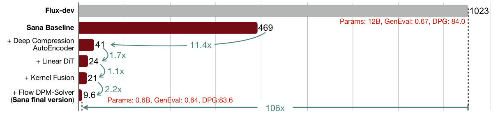
读图顺序：先沿柱图逐项看空间压缩、线性注意力、调度与内核的累计影响，再看A100/batch1条件。柱高是秒，不能把每项收益当独立变量。
4096²累计时延账单：SANA初始469秒，依次加入深压缩、线性DiT、融合与求解器后为41、24、21、9.6秒；不是四项独立倍率。 固定版本 v3；页码为 PDF 文件页码（从 1 起）。请结合上面的算例看模块插入位置，点击可放大核对。 固定版本PDF该页 ↗| 条件 | 指标 | 基线 | 结果 | 差值 |
|---|---|---|---|---|
| 作者SANA基线→深压缩→线性DiT→融合→Flow-DPM；Figure2配置 v3 Figure2，PDF第2页 ↗ | 4096²累计时延↓ | — | 469→41→24→21→9.6s | — |
| F32C32；重建性能与生成能力分开 v3 Table1，PDF第4页 ↗ | 高压缩重建取舍 | SDXL F8C4：0.31 / 31.41dB | rFID0.34 / PSNR29.29dB | — |
该曲线是整体设计栈的累计对照，比较FLUX还涉及不同模型。高压缩下文字/细节也需要单独测试。
图2条件补注：4096²、A100、batch=1；469→41→24→21→9.6秒是累计设计步骤，不是独立可相乘倍率；1023秒FLUX基线另列。
用残差自编码与分阶段适配提高空间压缩率，从源头缩短扩散模型token序列。
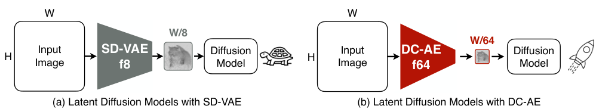
作者原图，v8，PDF文件第2页。仅裁切周围正文，未重绘。原文该页 ↗
| 条件 | 指标 | 基线 | 结果 | 差值 |
|---|---|---|---|---|
| PIXART-α；MJHQ512²；20NFE；所有模型从头训练100k iterations；H100/TensorRT测推理吞吐；fp16 Table 4，PDF 第8页；训练说明第9页 ↗ | 推理吞吐 ↑；FID ↓；CLIP ↑ | SD-VAE-f8,p2：7.81 image/s；6.3；26.36 | DC-AE-f32,p1：31.27 image/s；6.1；26.41 | 吞吐约4.00×；FID−0.2；CLIP+0.05 |
| 同PIXART-α512²模型组；RTX3090、batch2测延迟；训练显存按PyTorch batch256，不与推理显存混同 Table 4，第8页；Efficiency Profiling第7页 ↗ | 延迟 ↓；训练显存 ↓ | 742ms；60.45GB | 209ms；23.77GB | 延迟约3.55×；训练显存−60.7%；吞吐与延迟硬件不同 |
是架构/潜空间设计与训练路线，不能免训练替换任意已有FLUX模型；后续DC-Gen专门处理这种迁移。表中60.45→23.77GB是训练显存，不能说成推理占用。
Table 4，PDF 第8页；训练说明第9页；Table 4，第8页；Efficiency Profiling第7页 ↗
以输入对齐、输出对齐和短LoRA后训练，把已有生成模型迁到深压缩latent空间。

| 条件 | 指标 | 基线 | 结果 | 差值 |
|---|---|---|---|---|
| FLUX.1-Krea12B；MJHQ30K1024²；singleH100；TensorRT；仅DiT backbone latency，不含文本/VAE等完整管线 Table 1，PDF 第8页 ↗ | 主干延迟 ↓；CLIP ↑；GenEval ↑ | f8：4.06s；27.93；0.69 | DC-Gen f32：0.88s；28.02；0.71 | 主干约4.61×；CLIP+0.09；GenEval+0.02 |
| Z-Image-Turbo；同1024²评测及H100/TensorRT主干口径 Table 1，PDF 第8页 ↗ | 主干延迟 ↓；CLIP ↑；GenEval ↑ | 原版：1.92s；27.61；0.84 | DC-Gen：0.47s；27.58；0.84 | 主干约4.09×；CLIP−0.03，GenEval持平 |
这里只引用1024²、相同模型组的主干结果。高分辨率超大倍数比较可能同时改变生成分辨率与训练适配，不能当作原生4K模型的普遍加速比；后训练使用16H100，算力成本不可省略。
用带噪latent条件的少步像素扩散统一解码与放大，并允许基础生成器提前停。

| 条件 | 指标 | 基线 | 结果 | 差值 |
|---|---|---|---|---|
| FLUX.1-dev latent；1000DPGBench prompts；4×上采样；PiD24/28；singleGB200；torch.compile；延迟仅latent-to-high-res解码管线 Table 1，PDF 第10页；协议第9页 ↗ | 解码延迟 ↓；NIQE ↓ | VAE+SeedVR2-3B：1237.5ms；4.05 | PiD：211.2ms；3.50 | 解码约5.86×；NIQE−0.55；不含基础LDM前24步 |
| 同latent/任务/编译硬件；保留轻量超分更快的反例 Table 1，PDF 第10页 ↗ | 解码延迟 ↓；NIQE ↓ | VAE+RealESRGAN：62.2ms；4.93 | PiD：211.2ms；3.50 | PiD约3.40×更慢；NIQE改善1.43，质量/时间取舍 |
| FLUX.1 latent；50步像素教师与4步学生；小文字还原与无参考质量，不可用更好NIQE替代忠实度 Table 2，PDF 第11页 ↗ | NIQE ↓；小文字PSNR ↑ | Teacher：4.92；24.96dB | Student：3.50；24.19dB | NIQE改善，但小文字PSNR−0.77dB |
论文的end-to-end限定在decoder路径，含解码/上采样，不含基础文生图LDM。轻量RealESRGAN实际更快；像素生成细化存在忠实度取舍，海报中文字尤其要检查。
Table 1，PDF 第10页；协议第9页；Table 1，PDF 第10页；Table 2，PDF 第11页 ↗
动态token、patch粒度与网络阶段各自调整。
合并相似token计算，再展开回原空间。
| 条件 | 指标 | 基线 | 结果 | 差值 |
|---|---|---|---|---|
| SD1.5，512²、50PLMS、CFG7.5、RTX4090；合并50% v1 Table4、实验设置 ↗ | 每图时延↓ / 显存↓ / FID↓ | 3.09s / 3.41GB / 33.12 | 1.65s / 0.89GB / 33.02 | — |
| 同表合并60%，质量略降 v1 Table4 ↗ | 更强合并取舍 | 基线FID33.12 | 1.52s / 0.60GB / FID33.37 | — |
这里FID是2000类提示生成图对5000ImageNet验证图，不是COCO-FID；不能与其他模型的8或20直接比较。
大 patch 的弱模式先画全局，小 patch 的强模式后补细节，以蒸馏适配同一 DiT。
| 条件 | 指标 | 基线 | 结果 | 差值 |
|---|---|---|---|---|
| Emu1.7B DiT；1024²文生图；同一实验的动态/全计算配置；图像质量及FLOPs，不借用视频75%结果 Figure 7内结果表，PDF 第7页 ↗ | 相对FLOPs ↓；FID ↓；CLIP ↑；VQA ↑ | 100%；26.00；26.05；70.17 | 53%；26.10；26.07；70.09 | FLOPs−47%；FID+0.10、VQA−0.08，近似而非严格无损 |
| T2I Transformer；256²文生图；DDPM；同组基线 Figure 7内结果表，PDF 第7页 ↗ | 相对FLOPs ↓；FID ↓；CLIP ↑ | 100%；14.75；25.60 | 58%；14.71；25.58 | FLOPs−42%；FID−0.04，CLIP−0.02 |
| Emu；200 prompts；8名标注者、2400比较；动态50步（10强+40弱）对18步全强预算对照 Figure 7右，PDF 第7页 ↗ | 人类偏好 | 18步全强作为配对参照 | 动态配置 Win43.0%；Tie41.5%；Lose15.5% | 偏好比较；不是无提示词/无计算条件的通用胜率 |
需要新patch模式的训练/蒸馏，不能作为任意模型的免训练开关。表中47%是图像计算量节省，视频75%和具体硬件上的延迟测量不能移作本表的图像端到端数据。
Figure 7内结果表，PDF 第7页；Figure 7右，PDF 第7页 ↗
动态改变每步patch尺寸，按潜变量变化率决定何时粗算、何时细算。

作者原图，v1，PDF文件第3页。仅裁切周围正文，未重绘。原文该页 ↗
| 条件 | 指标 | 基线 | 结果 | 差值 |
|---|---|---|---|---|
| 作者同平台原模型→DDiT；本文未明确列出该表测试GPU，勿与别文秒数横比 v1 Table 1，PDF文件第6页 ↗ | FLUX.1-dev 50步，1024² | 对应对照与变化见结果栏 | 12.0→5.5s/图（约2.18×）；COCO FID33.07→33.42（变差） | — |
| DDiT+TeaCache δ0.4；速度进一步降低，FID较原模型+0.53，需检查任务质量 v1 Table 1，PDF文件第6页 ↗ | 与TeaCache组合 | — | 3.4s/图；FID33.60 | — |
这是空间/每步工作量路线，不是DMD蒸馏，也不是减少50步本身。单表测试硬件未确认；轻量调度器免训练不代表整个模型免适配。
在总剪枝预算下搜索逐阶段子网络，并预计算OBS更新权重，改善动态压缩后的质量。
| 条件 | 指标 | 基线 | 结果 | 差值 |
|---|---|---|---|---|
| DiT-XL/2；ImageNet256，50k生成图；20DDIM、CFG2.1；singleL40S48GB；OBS约31.25%稀疏；本表未交代batch及MACs量级单位 Table 1，PDF 第11页；设置第10页 ↗ | FID ↓；表中延迟 ↓；MACs（原数）↓ | Dense：FID4.49；83.60ms；MACs2.37 | Diff-ES：FID3.63；69.42ms；MACs1.66 | 表中约1.20×；FID−0.86；MACs−30.0%，不补写未印单位 |
| 同DiT设置与近似同MACs；MosaicDiff 31.46% vs Diff-ES31.25% Table 1，PDF 第11页 ↗ | FID ↓；延迟 ↓ | MosaicDiff：4.01；68.91ms | Diff-ES：3.63；69.42ms | FID−0.38；实际延迟多0.51ms；并非所有基线都更快 |
| SDXL-base1.0；COCO2017评测5k；1024²；20EulerAncestral、CFG7.5；L40S48GB；OBS30% Table 2，PDF 第12页；设置第10页 ↗ | FID ↓；CLIP ↑；SSIM ↑ | MosaicDiff：59.09；0.3020；0.5367 | Diff-ES：25.87；0.3214；0.7118 | FID−33.22；CLIP+0.0194；SSIM+0.1751；dense FID25.46仍略好 |
| DiT；43.75%稀疏；同一整体延迟协议；batch scaling，资源L40S48GB；不能同Table1不明batch数值混为一组 Appendix E/Table 10，PDF 第22–23页 ↗ | 整体延迟 ↓；不同batch的收益边界 | Dense：batch1 158.7ms；batch8 670.3ms | Pruned：batch1 188.5ms；batch8 489.6ms | batch1反而+18.8%；batch8约1.369×更快，权重路由成本需组批摊销 |
离线搜索与校准有成本；相近剪枝预算下主要收益是质量恢复，并不保证比MosaicDiff更低延迟。附录整体计时在batch1实际更慢，优势偏向吞吐型组批；SDXL仅选4个prompt搜索且用代理质量指标，迁移复杂海报需求需另测。
Table 1，PDF 第11页；设置第10页；Table 1，PDF 第11页；Table 2，PDF 第12页；设置第10页；Appendix E/Table 10，PDF 第22–23页 ↗
分层辨别冗余，或组合稀疏与线性计算。
窗口残差、跨步和CFG共享共同减少注意力冗余。
| 条件 | 指标 | 基线 | 结果 | 差值 |
|---|---|---|---|---|
| PixArt-Sigma2048²；NVIDIA A10040G；FLOPs仅指attention v1 摘要；§4.4、Figure8 ↗ | 高分辨率加速（作者报告） | — | 最高约1.6×；注意力FLOPs减少36–88% | — |
| PixArt-Sigma2K、16384token；非整张图时延 v1 Table1 ↗ | 局部算子时延比例 | — | WA-RS+ASC：原注意力时延的36% | — |
注意力88% FLOPs削减不等于整模88%削减；在DiT-XL512的D6设置整图仅降到94.27%，瓶颈不同。
先重排 token 形成规整块结构，再分别优化稀疏掩码与分块量化，减少 attention 误差。
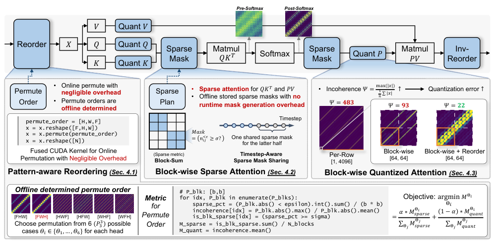
作者原图，v1，PDF文件第5页。仅裁切周围正文，未重绘。原文该页 ↗
| 条件 | 指标 | 基线 | 结果 | 差值 |
|---|---|---|---|---|
| FLUX.1-dev；1024²；30步；COCO前1024 prompts；2条校准prompt；75% dense；稀疏比较A100/CUDA11.8 Table 2，PDF 第8页；设置第7页 ↗ | FID-FP16 ↓；PSNR ↑；ImageReward ↑ | DiTFastAttn：28.31；16.73dB；0.96 | PARO：19.47；20.95dB；1.01 | 相对原FP16输出的距离−8.84；PSNR+4.22dB；不是对真实图像FID |
| 同FLUX图像设置；50% dense；与同密度稀疏基线比较 Table 2，PDF 第8页 ↗ | ImageReward ↑；PSNR ↑ | DiTFastAttn：0.81；12.49dB | PARO：1.04；16.20dB | +0.23；+3.71dB |
| 同FLUX图像设置；QK与PV均INT4；低比特比较RTX4090；此行只报告质量 Table 2，PDF 第8页 ↗ | CLIP ↑；ImageReward ↑；FID-FP16 ↓ | 完整FP16：0.258；1.02；0.00 | PARO INT4：0.258；1.00；19.65 | 质量有近似误差；该图像表没有端到端加速比 |
论文的部分高倍加速与重排消融来自 CogVideoX视频，不作为FLUX图像端到端结果。FID-FP16表示与原生成输出的分布距离，不应与真实图像FID混排。
Table 2，PDF 第8页；设置第7页；Table 2，PDF 第8页 ↗
把重要attention交给稀疏精算，把中等权重交给可训练线性补偿，极小权重跳过。
| 条件 | 指标 | 基线 | 结果 | 差值 |
|---|---|---|---|---|
| LightningDiT-1p0B/1，1.03B参数；ImageNet512²；训练100k步、batch128；仅attention FLOPs，未给图像端到端硬件延迟 Appendix A.2/Table 3，PDF 第15页 ↗ | FID ↓；attention FLOPs ↓；稀疏率 ↑ | FullAttention：31.87；12.88G；0% | SLA：31.49；1.73G；87.50% | FID−0.38；attention计算量约7.45×下降（−86.6%），非全管线7.45×加速 |
| 同图像训练设置；与可训练SpargeAttn-T比较；不同稀疏水平 Appendix A.2/Table 3，PDF 第15页 ↗ | FID ↓；attention FLOPs ↓ | SpargeAttn-T：46.05；3.16G | SLA：31.49；1.73G | FID−14.56；计算量−45.3%；不是等稀疏率单因素消融 |
正文19.3×与RTX5090端到端曲线来自Wan视频，图像只引用附录A.2的FID/FLOPs；不能把87.5%稀疏直接换算成同幅端到端收益。
Appendix A.2/Table 3，PDF 第15页 ↗
从表示压缩到免训token/attention压缩，是否需要重训、会损失什么、能否保持文字，是选择顺序。减少总FLOPs后还要重新看文本编码和VAE占比。
通过分块与在线softmax减少显存读写，保持标准注意力的数学运算。
适用边界通用内核接口不保证支持任意混合mask；它与稀疏注意力、INT4/FP8注意力的误差来源不同。版本号未确认，本轮不裁图复用。
图1先看HBM与SRAM的数据移动，再看分块如何避免保存大矩阵；右侧特定语言模型训练速度不代表图像生成速度。
未嵌入作者图。图注/相关方法已读；PDF下载未完成或版本未确认。请从上方原文入口查看，不以自绘图代替。
改进量化注意力的FP8计算实现，降低SageAttention2的中间累积开销。

作者原图，v3，PDF文件第3页。仅裁切周围正文，未重绘。原文该页 ↗
适用边界8+8和4+8误差不同；图像指标相近不证明所有文字/布局保持。面向NVIDIA特定指令的实测不能直接迁移国产卡。
问题 05
低比特与结构压缩应同时报告质量与真实执行成本。
少步模型每步仍要读取大量权重；若显存放不下，需要offload，省下的去噪计算可能被传输吃掉。低比特缩小权重/激活，剪枝减少结构，但异常值与误差累积会损害细节。
只把参数文件变小不够：低秩补偿若多一次读写，推理可能更慢；剪掉模块后若没有重新对齐，也可能破坏生成分布。需要压缩算法与执行引擎配套。
图中展示 4 项代表，本章正文保留全部 6 项。
校准、低秩分支与实测内核必须分别核实。
跨去噪时刻收集校准样本，并拆分跳连量化范围。
| 条件 | 指标 | 基线 | 结果 | 差值 |
|---|---|---|---|---|
| DDIM；CIFAR10 32²；同论文量化评测 v1 Table 2（作者HTML） ↗ | FID ↓ | 线性W4A8：72.31；FP32：4.22 | Q-Diffusion W4A8：5.07 | 比线性 −67.24；比FP32 +0.85 |
| LDM-4；LSUN-Bedrooms 256² v1 Table 3 ↗ | FID ↓ | 线性W4A8：54.10；FP32：2.98 | Q-Diffusion W4A8：4.55 | 比FP32 +1.57 |
这些表证明低位宽质量恢复，未给本专题条件下的端到端实测倍数；4bit权重不意味着整个出图管线压缩8倍。
v1 §3.2–3.3；Table 2–3（作者HTML） ↗
低秩分支吸收异常值，剩余部分低比特执行。

| 条件 | 指标 | 基线 | 结果 | 差值 |
|---|---|---|---|---|
| MJHQ，50步INT W4A4；与同模型BF16比较 v4 Table1，PDF第8页 ↗ | FLUX-dev FID↓ / ImageReward↑ | BF16：20.3 / 0.953 | 19.9 / 0.935 | — |
| PixArtΣ、rank64、MJHQ1000样本 v4 Figure10，PDF第10页 ↗ | 分解/平滑消融ImageReward↑ | 仅平滑0.508；无平滑0.690 | 0.878 | — |
| 论文结论RTX4090/5090实现，配置详见Figure8 v4 Figure8及结论，PDF第9–10页 ↗ | 引擎收益（作者报告） | — | 约3.5×显存减少；较W4A16约3.0×提速 | — |
量化后FID略好而ImageReward下降，说明指标测量内容不同。Figure10的0.931 FP16基线与Table1样本范围不同，不能混算差值。
v4 §3–5、Figure3、Table1，PDF第3–10页 ↗
把FLUX线性权重约束为三值并配专用kernel，大幅减存储，实际延迟收益依设备而变。
| 条件 | 指标 | 基线 | 结果 | 差值 |
|---|---|---|---|---|
| FLUX.1-dev视觉transformer；1024²；50步单图；分别使用A100、L20；仅该组件延迟，表格未明确时间单位 Table 3，PDF 第3页 ↗ | 组件延迟 ↓ | A100：26.4；L20：90.2 | A100：25.0；L20：78.3 | 原表报告A100改善5.3%、L20改善13.2%；不是5.1×速度 |
| 同视觉transformer；A10080GB；50步单图；图中存储/显存按原标注GB Figure 2，PDF 第2页 ↗ | 推理显存 ↓；checkpoint大小 ↓ | 24.7GB；22.3GB | 4.8GB；2.9GB | 显存约5.1×下降；存储约7.7×下降；文本编码器不在该组件统计内 |
| 1024²；GenEval553 prompts×4图；T2ICompBench8类×300 prompts×10图；专用kernel版本 Tables 1–2，PDF 第3页；设置第4–5页 ↗ | GenEval ↑；CompBench平均 ↑ | FP16 FLUX：0.66；0.5876 | 1.58bit FLUX：0.64；0.5812 | −0.02；−0.0064；压缩有质量代价 |
1.58bit是三值信息量，物理存储按2bit；显存约5.1×不等于速度5.1×。Table3未明确单位，因此此处保留原数及百分比，不自行补秒；优化流程公开细节不足。
Table 3，PDF 第3页；Figure 2，PDF 第2页；Tables 1–2，PDF 第3页；设置第4–5页 ↗
用随机置换分块Hadamard旋转规整分布，再以固定码本做免校准量化。

| 条件 | 指标 | 基线 | 结果 | 差值 |
|---|---|---|---|---|
| FLUX.1-schnell；GenEval；4步、CFG0；W4A4质量；基线部分数值引自AdaTSQ报告，非全部统一重跑 Table 1，PDF 第6页 ↗ | GenEval Overall ↑ | FP16：0.664；SVDQuant W4A4：0.624 | OrbitQuant W4A4：0.703 | 相对SVDQuant+0.079；相对FP16+0.039，仅该模型配置 |
| FLUX.1-dev；GenEval；50步、CFG3.5；W4A4质量 Table 1，PDF 第6页 ↗ | GenEval Overall ↑ | FP16：0.667；SVDQuant W4A4：0.573 | OrbitQuant W4A4：0.633 | 相对SVDQuant+0.060；相对FP16−0.034 |
| FLUX.1-schnell；W3A3；3随机种子均值；旋转消融；时间是旋转本身而非整图 Table 3，PDF 第8页 ↗ | GenEval ↑；旋转时间 ↓ | Block-RHT：0.642；0.381s | RPBH：0.674；0.451s | 质量+0.032；旋转额外+0.070s，存在开销取舍 |
免校准不等于无计算，也不等于已有高效低比特部署。PDF第7页明确使用fake quantization和BF16 matmul；不能把“优于其他量化器的开销”写为“相对原模型低比特实测加速”。
Table 1，PDF 第6页；Table 3，PDF 第8页 ↗
编码器、分辨率级联和权重常驻改变整条链路。
先按去噪器可见的文本表示误差跳过子层，再复用保留层，主要节省参数与显存。

| 条件 | 指标 | 基线 | 结果 | 差值 |
|---|---|---|---|---|
| PixArt-Σ；COCO30K验证 prompt；Bfloat16 管线；模型参数/显存与 FLOPs 按全文管线统计 Table 2，PDF 第7页 ↗ | 参数；显存；FLOPs | 5.42B；10.18GB；91.94TFLOPs | 3.43B；6.46GB；91.90TFLOPs | 参数−36.7%；显存−3.72GB（−36.5%）；FLOPs仅−0.04TFLOPs |
| PixArt-Σ；最大41.9%文本编码器稀疏；COCO30K及GenEval；质量口径，不声明实测延迟 Table 1，PDF 第6页 ↗ | FID ↓；GenEval Overall ↑ | 22.89；0.539 | 19.93；0.442 | FID−2.96，但组合遵循分数−0.097 |
| 最大41.9%稀疏下 beam搜索；k=1与k=3；非端到端加速实验 Table 3，PDF 第8页 ↗ | CLIP ↑；DreamSim ↑；Counting ↑ | k=1：0.310；0.737；0.372 | k=3：0.313；0.746；0.450 | 更宽搜索改善该组质量；仍有离线搜索成本 |
文本编码器只占文中基线约0.6%管线FLOPs；内存下降不等于同幅延迟改善。最大压缩配置的 GenEval下降，海报文字/空间关系能力需另测；没有把“春日”生成成功当作论文实测。
Table 2，PDF 第7页；Table 1，PDF 第6页；Table 3，PDF 第8页 ↗
大基模先少步蒸馏，再做树状混合策略剪枝。
| 条件 | 指标 | 基线 | 结果 | 差值 |
|---|---|---|---|---|
| 报告的蒸馏后压缩规格；75%为参数量减少 v3 §4.3–4.4，PDF第10页 ↗ | 模型参数↓ / NFE | 原80B | 80B→20B；4–8 NFE | 参数−75% |
| TMP压缩+memory-efficient inference，非仅剪枝一个因素 v3 §4.4，PDF第10页 ↗ | 部署能力（作者报告） | — | 单24GB RTX4090可部署 | — |
该节没有隔离出的剪枝质量数值主表；整模SSAE/GSB不能当作20B压缩版无损的定量证明，故只报告配置与作者可部署主张。
量化减少位宽，剪枝改变结构，少步压缩时间；三者处理不同成本维度。应按同样输出质量实测组合，不能把各论文最优倍数相乘。
针对DiT在token、条件、时间和通道上的变化，组合细粒度动态量化与静态—动态通道平衡。
适用边界PTQ仍需校准和相应融合内核；论文整体1.4–1.7×范围含不同模型，不等于每个图像模型。国产卡需重验算子与低位宽实现。本地缺图。
图2把四类分布变化对应到量化设计；图3区分固定初始偏斜和随时刻变化的偏斜。图6看图像条件，图5是视频，不能混作同一证据。
未嵌入作者图。图注/相关方法已读；PDF下载未完成或版本未确认。请从上方原文入口查看，不以自绘图代替。
问题 06
通信、陈旧特征、调度和固定成本决定系统收益。
数据并行能同时画更多图，却未必让单张图更快。要缩短一张图的延迟，必须把层、空间patch、序列或CFG分支分到多卡。每种拆法都会引入通信和同步，低带宽环境可能越多卡越慢。
图像扩散允许利用相邻步特征相似，把部分通信放到后台，但这引入陈旧特征。不同NVLink/PCIe/跨机网络的最优策略不同；端到端还要算文本编码、VAE、offload与编译预热。
多GPU分画空间区域，以旧全局激活保上下文，并把新特征通信与计算重叠。

读图顺序：从左向右看不同GPU的patch计算与异步all-gather。关键是把上一时刻上下文通信与当前计算重叠，不能把计算与全部通信耗时简单相加。
实线是当前区域计算，红虚线是异步通信；背景特征来自上一步。注意跨块信息得到近似保留，区别于各 GPU 独立生成图块。 固定版本PDF该页 ↗| 条件 | 指标 | 基线 | 结果 | 差值 |
|---|---|---|---|---|
| SDXL；1024²；COCO2014val 5k；50步DDIM、CFG5；A100；单GPU原版vs8GPU DistriFusion Table 1，PDF 第8页；设置第7页 ↗ | 单图延迟 ↓；FID-GT ↓ | 5.02s；FID24.0 | 1.77s；FID24.4 | 约2.84×更低延迟；FID+0.4；使用8倍设备数 |
| 同50步1024²、8A100；与无跨块交互naive patch比较 Table 1，PDF 第8页 ↗ | 延迟 ↓；FID-GT ↓ | NaivePatch：1.27s；FID252 | DistriFusion：1.77s；FID24.4 | 多0.50s换取跨块质量；不是最快方法无损获胜 |
| SDXL；50步；8A100；3840²；与1GPU原版比较，分辨率不能移用到1024² Table 2，PDF 第8页 ↗ | 单图延迟 ↓ | 140s | 22.9s | 约6.11×；这是3840²的结果 |
这是增加GPU数以降延迟，不代表总GPU秒更省。公开6.1×对应3840²；1024²约2.8×。异步通信依赖互联与负载；warmup与极少步模型需另行验证。
Table 1，PDF 第8页；设置第7页；Table 1，PDF 第8页；Table 2，PDF 第8页 ↗
patch流水线配合模型切层，复用相邻步上下文。
| 条件 | 指标 | 基线 | 结果 | 差值 |
|---|---|---|---|---|
| PixArtα，4×A10080GB PCIe；20-step DPM，patch数搜索，warmup1 v1 §4.2.2、Figure6 ↗ | 对最佳并行基线的时延比 | — | 1024²：2.01×；2048²：1.48× | — |
| 与PCIe结论分开；8192²部分其他策略OOM v1 §4.2.2、Figure9 ↗ | 带宽边界 | — | 8×A100 NVLink下未取得最低时延，但显存有优势 | — |
倍数是相对同图分辨率下最优其他并行策略，非始终相对单卡。陈旧KV会改变输出；只做时延比较不够。
切分模型并异步用旧特征，跨GPU重叠计算。
| 条件 | 指标 | 基线 | 结果 | 差值 |
|---|---|---|---|---|
| 2×A5000，N=2,S=1；50DDIM；同模型 v1 Table1、实现设置 ↗ | SD2.1时延↓ / CLIP↑ | 1卡5.51s / 31.60 | 3.03s / 31.59 | 1.8×；CLIP−0.01 |
| 4×A5000，N=3,S=2，同SD2.1 v1 Table1 ↗ | 更激进配置时延 / FID | 1卡5.51s / FID27.89 | 1.35s / 29.41 | 4.0×；FID变差1.52 |
近线性延迟收益不等于总GPU算力成本降低；4卡更快也使用更多资源。高加速下LPIPS0.3778，不能写成像素无损。
按网络拓扑组合序列、patch流水线和CFG并行。
| 条件 | 指标 | 基线 | 结果 | 差值 |
|---|---|---|---|---|
| 作者5类模型，5次运行平均；并非本地重新跑出的基准 v1 §5.1 ↗ | 已验证扩展设置 | — | 2节点×8张L40（100GbE）；单节点8×A100 NVLink | — |
| PixArt 20-step DPM；对照不同并行组合 v1 §5.2.1、Figure8 ↗ | 关键系统对照 | — | 跨16张L40，单一TP/SP等会比8卡更慢；跨节点CFG并行减少通信 | — |
本版不从曲线截图估算一个精确提速值；保留已核实的拓扑与扩展结论。真实部署还需按当前引擎与GPU复测。
v1 §3–5、Table1–2、Figure8及后续扩展图 ↗
先降低单卡冗余，再决定多卡拆分。用相同交付质量报告单图时延、吞吐、显存和GPU秒，才知道是在省钱、变快还是仅换了资源。
原稿发现目录（历史快照）。此区的“正文已核（64）”与候选状态沿用原稿，不是当前72项总表；本轮新增8项及核验结果见核验范围。
完整候选目录 · 不以排版决定收录
已核正文与发现线索分开显示。待核项只有相关性证据，尚不能引用其搜索摘要作为实验结论；身份待核记录不计入相关论文重复率。
| 状态 | 资料与发现轮次 | 判定理由 |
|---|---|---|
| 正文已核 | 1.58-bit FLUX2412.18653 · R2 | 固定版本原文已核；正文保留机制、教学步骤、实验条件及适用边界。 |
| 正文已核 | Align Your Flow: Scaling Continuous-Time Flow Map Distillation2506.14603 · R1 | 固定版本原文已核；正文保留机制、教学步骤、实验条件及适用边界。 |
| 正文已核 | Align Your Steps: Optimizing Sampling Schedules in Diffusion Models2404.14507 · R1 | 固定版本原文已核；正文保留机制、教学步骤、实验条件及适用边界。 |
| 正文已核 | AsyncDiff: Parallelizing Diffusion Models by Asynchronous Denoising2406.06911 · 原版 | 固定版本原文已核；正文保留机制、教学步骤、实验条件及适用边界。 |
| 正文已核 | Calibri: Enhancing Diffusion Transformers via Parameter-Efficient Calibration2603.24800 · R2 | 固定版本原文已核；正文保留机制、教学步骤、实验条件及适用边界。 |
| 正文已核 | Consistency Models2303.01469 · R1 / R3 | 固定版本原文已核；正文保留机制、教学步骤、实验条件及适用边界。 |
| 正文已核 | Continuous-Time Distribution Matching for Few-Step Diffusion Distillation2605.06376 · 本地 | 固定版本原文已核；正文保留机制、教学步骤、实验条件及适用边界。 |
| 正文已核 | DC-Gen: Post-Training Diffusion Acceleration with Deeply Compressed Latent Space2509.25180 · R2 | 固定版本原文已核；正文保留机制、教学步骤、实验条件及适用边界。 |
| 正文已核 | DDiT: Dynamic Patch Scheduling for Efficient Diffusion Transformers2602.16968 · 本地 | 固定版本原文已核；正文保留机制、教学步骤、实验条件及适用边界。 |
| 正文已核 | DPM-Solver++: Fast Solver for Guided Sampling of Diffusion Probabilistic Models2211.01095 · R1 | 固定版本原文已核；正文保留机制、教学步骤、实验条件及适用边界。 |
| 正文已核 | DPM-Solver: A Fast ODE Solver for Diffusion Probabilistic Model Sampling in Around 10 Steps2206.00927 · R1 | 固定版本原文已核；正文保留机制、教学步骤、实验条件及适用边界。 |
| 正文已核 | Decoupled DMD: CFG Augmentation as the Spear, Distribution Matching as the Shield2511.22677 · 本地 | 固定版本原文已核；正文保留机制、教学步骤、实验条件及适用边界。 |
| 正文已核 | Deep Compression Autoencoder for Efficient High-Resolution Diffusion Models2410.10733 · 本地 | 固定版本原文已核；正文保留机制、教学步骤、实验条件及适用边界。 |
| 正文已核 | DeepCache: Accelerating Diffusion Models for Free2312.00858 · R1 / R2 / R3 | 固定版本原文已核；正文保留机制、教学步骤、实验条件及适用边界。 |
| 正文已核 | Denoising Diffusion Implicit Models2010.02502 · 本地 | 固定版本原文已核；正文保留机制、教学步骤、实验条件及适用边界。 |
| 正文已核 | DiCache: Let Diffusion Model Determine Its Own Cache2508.17356 · R1 / R2 / R3 | 固定版本原文已核；正文保留机制、教学步骤、实验条件及适用边界。 |
| 正文已核 | DiTFastAttn: Attention Compression for Diffusion Transformer Models2406.08552 · 原版 | 固定版本原文已核；正文保留机制、教学步骤、实验条件及适用边界。 |
| 正文已核 | Diff-ES: Stage-wise Structural Diffusion Pruning via Evolutionary Search2603.05105 · 本地 | 固定版本原文已核；正文保留机制、教学步骤、实验条件及适用边界。 |
| 正文已核 | DistriFusion: Distributed Parallel Inference for High-Resolution Diffusion Models2402.19481 · R1 | 固定版本原文已核；正文保留机制、教学步骤、实验条件及适用边界。 |
| 正文已核 | Diversity-Preserved Distribution Matching Distillation for Fast Visual Synthesis2602.03139 · R2 / R3 | 固定版本原文已核；正文保留机制、教学步骤、实验条件及适用边界。 |
| 正文已核 | Extending One-Step Image Generation from Class Labels to Text via Discriminative Text Representation2604.18168 · R2 | 固定版本原文已核；正文保留机制、教学步骤、实验条件及适用边界。 |
| 正文已核 | FORA: Fast-Forward Caching in Diffusion Transformer Acceleration2407.01425 · R1 | 固定版本原文已核；正文保留机制、教学步骤、实验条件及适用边界。 |
| 正文已核 | FastGen-PDD: Parallel Decoding Distillation for Image and Video Generation2607.26004 · R2 | 固定版本原文已核；正文保留机制、教学步骤、实验条件及适用边界。 |
| 正文已核 | Flash-DMD: Towards High-Fidelity Few-Step Image Generation with Efficient Distillation and Joint Reinforcement Learning2511.20549 · R2 / R3 | 固定版本原文已核；正文保留机制、教学步骤、实验条件及适用边界。 |
| 正文已核 | FlexiDiT: Your Diffusion Transformer Can Easily Generate High-Quality Samples with Less Compute2502.20126 · 本地 | 固定版本原文已核；正文保留机制、教学步骤、实验条件及适用边界。 |
| 正文已核 | From Reusing to Forecasting: Accelerating Diffusion Models with TaylorSeers2503.06923 · R1 | 固定版本原文已核；正文保留机制、教学步骤、实验条件及适用边界。 |
| 正文已核 | Glance: Accelerating Diffusion Models with 1 Sample2512.02899 · 本地 | 固定版本原文已核；正文保留机制、教学步骤、实验条件及适用边界。 |
| 正文已核 | HunyuanImage 3.0 Technical Report2509.23951 · R2 | 固定版本原文已核；正文保留机制、教学步骤、实验条件及适用边界。 |
| 正文已核 | Hyper-SD: Trajectory Segmented Consistency Model for Efficient Image Synthesis2404.13686 · R1 | 固定版本原文已核；正文保留机制、教学步骤、实验条件及适用边界。 |
| 正文已核 | Improved Distribution Matching Distillation for Fast Image Synthesis2405.14867 · 原版 | 固定版本原文已核；正文保留机制、教学步骤、实验条件及适用边界。 |
| 正文已核 | Improved Techniques for Training Consistency Models2310.14189 · R3 | 固定版本原文已核；正文保留机制、教学步骤、实验条件及适用边界。 |
| 正文已核 | LCM-LoRA: A Universal Stable-Diffusion Acceleration Module2311.05556 · 原版 | 固定版本原文已核；正文保留机制、教学步骤、实验条件及适用边界。 |
| 正文已核 | Latent Consistency Models: Synthesizing High-Resolution Images with Few-Step Inference2310.04378 · 本地 | 固定版本原文已核；正文保留机制、教学步骤、实验条件及适用边界。 |
| 正文已核 | Mage-Flow: An Efficient Native-Resolution Foundation Model for Image Generation and Editing2607.19064 · R2 | 固定版本原文已核；正文保留机制、教学步骤、实验条件及适用边界。 |
| 正文已核 | Mean Flows for One-step Generative Modeling2505.13447 · 原版 | 固定版本原文已核；正文保留机制、教学步骤、实验条件及适用边界。 |
| 正文已核 | One-step Diffusion with Distribution Matching Distillation2311.18828 · R1 / R2 / R3 | 固定版本原文已核；正文保留机制、教学步骤、实验条件及适用边界。 |
| 正文已核 | OrbitQuant: Data-Agnostic Quantization for Image and Video Diffusion Transformers2607.02461 · R2 | 固定版本原文已核；正文保留机制、教学步骤、实验条件及适用边界。 |
| 正文已核 | PAROAttention: Pattern-Aware ReOrdering for Efficient Sparse and Quantized Attention in Visual Generation Models2506.16054 · R2 | 固定版本原文已核；正文保留机制、教学步骤、实验条件及适用边界。 |
| 正文已核 | PeRFlow: Piecewise Rectified Flow as Universal Plug-and-Play Accelerator2405.07510 · 本地 | 固定版本原文已核；正文保留机制、教学步骤、实验条件及适用边界。 |
| 正文已核 | Phased DMD: Few-step Distribution Matching Distillation via Score Matching within Subintervals2510.27684 · R2 | 固定版本原文已核；正文保留机制、教学步骤、实验条件及适用边界。 |
| 正文已核 | PiD: Fast and High-Resolution Latent Decoding with Pixel Diffusion2605.23902 · 本地 | 固定版本原文已核；正文保留机制、教学步骤、实验条件及适用边界。 |
| 正文已核 | PipeFusion: Patch-level Pipeline Parallelism for Diffusion Transformers Inference2405.14430 · R1 | 固定版本原文已核；正文保留机制、教学步骤、实验条件及适用边界。 |
| 正文已核 | Progressive Distillation for Fast Sampling of Diffusion Models2202.00512 · R3 | 固定版本原文已核；正文保留机制、教学步骤、实验条件及适用边界。 |
| 正文已核 | Q-Diffusion: Quantizing Diffusion Models2302.04304 · R1 / R3 | 固定版本原文已核；正文保留机制、教学步骤、实验条件及适用边界。 |
| 正文已核 | Qwen-Image-2.0 Technical Report2605.10730 · 原版 | 固定版本原文已核；正文保留机制、教学步骤、实验条件及适用边界。 |
| 正文已核 | Qwen-Image-Flash: Rethinking the Training Recipe for Few-Step Distillation2606.03746 · 原版 | 固定版本原文已核；正文保留机制、教学步骤、实验条件及适用边界。 |
| 正文已核 | Region-Adaptive Sampling for Diffusion Transformers2502.10389 · R3 | 固定版本原文已核；正文保留机制、教学步骤、实验条件及适用边界。 |
| 正文已核 | Rethinking What to Cache in Few-Step Diffusion Transformers: Solver-Aware Target Selection2610.03577 · R1 / R2 / R3 | 固定版本原文已核；正文保留机制、教学步骤、实验条件及适用边界。 |
| 正文已核 | SANA-Sprint: One-Step Diffusion with Continuous-Time Consistency Distillation2503.09641 · R1 / R2 / R3 | 固定版本原文已核；正文保留机制、教学步骤、实验条件及适用边界。 |
| 正文已核 | SANA: Efficient High-Resolution Image Synthesis with Linear Diffusion Transformers2410.10629 · R2 | 固定版本原文已核；正文保留机制、教学步骤、实验条件及适用边界。 |
| 正文已核 | SDXL-Lightning: Progressive Adversarial Diffusion Distillation2402.13929 · 原版 | 固定版本原文已核；正文保留机制、教学步骤、实验条件及适用边界。 |
| 正文已核 | SLA: Beyond Sparsity in Diffusion Transformers via Fine-Tunable Sparse-Linear Attention2509.24006 · 本地 | 固定版本原文已核；正文保留机制、教学步骤、实验条件及适用边界。 |
| 正文已核 | SVDQuant: Absorbing Outliers by Low-Rank Components for 4-Bit Diffusion Models2411.05007 · 原版 | 固定版本原文已核；正文保留机制、教学步骤、实验条件及适用边界。 |
| 正文已核 | SeedEdit 3.0: Fast and High-Quality Generative Image Editing2506.05083 · 本地 | 固定版本原文已核；正文保留机制、教学步骤、实验条件及适用边界。 |
| 正文已核 | Seedream 2.0 · 模型加速章节2503.07703 · 本地 | 固定版本原文已核；正文保留机制、教学步骤、实验条件及适用边界。 |
| 正文已核 | Seedream 3.0 · 轨迹与噪声一致性2504.11346 · R3 | 固定版本原文已核；正文保留机制、教学步骤、实验条件及适用边界。 |
| 正文已核 | Seedream 4.0 · 系统加速配方2509.20427 · R3 | 固定版本原文已核；正文保留机制、教学步骤、实验条件及适用边界。 |
| 正文已核 | Skrr: Skip and Re-use Text Encoder Layers for Memory Efficient Text-to-Image Generation2502.08690 · R1 / R2 / R3 | 固定版本原文已核；正文保留机制、教学步骤、实验条件及适用边界。 |
| 正文已核 | Token Merging for Fast Stable Diffusion2303.17604 · R1 | 固定版本原文已核；正文保留机制、教学步骤、实验条件及适用边界。 |
| 正文已核 | TwinFlow: Realizing One-step Generation on Large Models with Self-adversarial Flows2512.05150 · 本地 | 固定版本原文已核；正文保留机制、教学步骤、实验条件及适用边界。 |
| 正文已核 | UniPC: A Unified Predictor-Corrector Framework for Fast Sampling of Diffusion Models2302.04867 · R1 | 固定版本原文已核；正文保留机制、教学步骤、实验条件及适用边界。 |
| 正文已核 | Visual Generation Without Guidance2501.15420 · R2 / R3 | 固定版本原文已核；正文保留机制、教学步骤、实验条件及适用边界。 |
| 正文已核 | Z-Image: An Efficient Image Generation Foundation Model with Single-Stream Diffusion Transformer2511.22699 · R2 | 固定版本原文已核；正文保留机制、教学步骤、实验条件及适用边界。 |
| 正文已核 | xDiT: an Inference Engine for Diffusion Transformers (DiTs) with Massive Parallelism2411.01738 · R1 | 固定版本原文已核；正文保留机制、教学步骤、实验条件及适用边界。 |
| 候选待核 | Absorbing Quantization Error by Deformable Noise Scheduler for Diffusion Modelstitle:absorbingquantizationerrorbydeformablenoiseschedulerfordiffusionmodels · R3 | 原始检索标题/主来源文本明确涉及图像生成的成本瓶颈；需下载原文核实验及设置后才可进入正文。 |
| 候选待核 | Accelerating Diffusion Sampling with Optimized Time Stepstitle:acceleratingdiffusionsamplingwithoptimizedtimesteps · R1 | 原始检索标题/主来源文本明确涉及图像生成的成本瓶颈；需下载原文核实验及设置后才可进入正文。 |
| 候选待核 | Accelerating Diffusion Transformer via Gradient-Optimized Cachetitle:acceleratingdiffusiontransformerviagradientoptimizedcache · R1 | 原始检索标题/主来源文本明确涉及图像生成的成本瓶颈；需下载原文核实验及设置后才可进入正文。 |
| 候选待核 | Accelerating Diffusion via Hybrid Data-Pipeline Parallelism Based on Conditional Guidancetitle:acceleratingdiffusionviahybriddatapipelineparallelismbasedonconditionalguidance · R1 | 原始检索标题/主来源文本明确涉及图像生成的成本瓶颈；需下载原文核实验及设置后才可进入正文。；原始检索标题/主来源文本明确涉及图像生成的成本瓶颈；需下载原文核实验及设置后才可进入正文。 |
| 候选待核 | Accelerating Image Generation with Sub-path Linear Approximation Modeleccv_2024_529 · 本地 | 补子路径/分段轨迹蒸馏，需核固定PDF名称SPLAM/SLAM。 |
| 候选待核 | Accelerating Parallel Diffusion Model Serving with Residual Compressiontitle:acceleratingparalleldiffusionmodelservingwithresidualcompression · R1 | 原始检索标题/主来源文本明确涉及图像生成的成本瓶颈；需下载原文核实验及设置后才可进入正文。 |
| 候选待核 | Accelerating Parallel Sampling of Diffusion Models2402.09970 · R1 | 原始检索标题/主来源文本明确涉及图像生成的成本瓶颈；需下载原文核实验及设置后才可进入正文。 |
| 候选待核 | Adaptive Guidance: Training-free Acceleration of Conditional Diffusion Models2312.12487 · R3 | 原始检索标题/主来源文本明确涉及图像生成的成本瓶颈；需下载原文核实验及设置后才可进入正文。 |
| 候选待核 | Adaptive Spectral Feature Forecasting for Diffusion Sampling Accelerationtitle:adaptivespectralfeatureforecastingfordiffusionsamplingacceleration · R1 / R2 / R3 | 原始检索标题/主来源文本明确涉及图像生成的成本瓶颈；需下载原文核实验及设置后才可进入正文。 |
| 候选待核 | Adversarial Distribution Matching for Diffusion Distillation Towards Efficient Image andtitle:adversarialdistributionmatchingfordiffusiondistillationtowardsefficientimageand · R2 / R3 | 原始检索标题/主来源文本明确涉及图像生成的成本瓶颈；需下载原文核实验及设置后才可进入正文。 |
| 候选待核 | Applying Guidance in a Limited Interval Improves2404.07724 · R3 | 原始检索标题/主来源文本明确涉及图像生成的成本瓶颈；需下载原文核实验及设置后才可进入正文。；原始检索标题/主来源文本明确涉及图像生成的成本瓶颈；需下载原文核实验及设置后才可进入正文。 |
| 候选待核 | Are First-Order Diffusion Samplers Really Slower? A Fast Forward-Value Approachtitle:arefirstorderdiffusionsamplersreallyslowerafastforwardvalueapproach · R1 | 原始检索标题/主来源文本明确涉及图像生成的成本瓶颈；需下载原文核实验及设置后才可进入正文。 |
| 候选待核 | Beyond Fixed Formulas Data-Driven Linear Predictor for Efficient Diffusion Modelstitle:beyondfixedformulasdatadrivenlinearpredictorforefficientdiffusionmodels · R1 | 原始检索标题/主来源文本明确涉及图像生成的成本瓶颈；需下载原文核实验及设置后才可进入正文。 |
| 候选待核 | BiFM Bidirectional Flow Matching for Few-Step Image Editing and Generationtitle:bifmbidirectionalflowmatchingforfewstepimageeditingandgeneration · R2 | 原始检索标题/主来源文本明确涉及图像生成的成本瓶颈；需下载原文核实验及设置后才可进入正文。 |
| 候选待核 | BiGain Unified Token Compression for Joint Generation and Classificationtitle:bigainunifiedtokencompressionforjointgenerationandclassification · R1 | 原始检索标题/主来源文本明确涉及图像生成的成本瓶颈；需下载原文核实验及设置后才可进入正文。 |
| 候选待核 | Budget-Constrained Step-Level Diffusion Cachingtitle:budgetconstrainedstepleveldiffusioncaching · R2 | 原始检索标题/主来源文本明确涉及图像生成的成本瓶颈；需下载原文核实验及设置后才可进入正文。 |
| 候选待核 | CFG-Zero*: Improved Classifier-Free Guidance for Flow Matching Models2503.18886 · 本地 | 主旨偏质量；保留NFE和引导预算边界，待核实际省算。 |
| 候选待核 | CHORDS Diffusion Sampling Accelerator with Multi-core Hierarchical ODE Solverstitle:chordsdiffusionsamplingacceleratorwithmulticorehierarchicalodesolvers · R1 | 原始检索标题/主来源文本明确涉及图像生成的成本瓶颈；需下载原文核实验及设置后才可进入正文。 |
| 候选待核 | Cache Me if You Can Accelerating Diffusion Models through Blocktitle:cachemeifyoucanacceleratingdiffusionmodelsthroughblock · R2 / R3 | 原始检索标题/主来源文本明确涉及图像生成的成本瓶颈；需下载原文核实验及设置后才可进入正文。；原始检索标题/主来源文本明确涉及图像生成的成本瓶颈；需下载原文核实验及设置后才可进入正文。 |
| 候选待核 | CacheEdit: Efficient Multi-round Image Editing via Adaptive Token-wise Reuse.title:cacheeditefficientmultiroundimageeditingviaadaptivetokenwisereuse · R2 / R3 | 原始检索标题/主来源文本明确涉及图像生成的成本瓶颈；需下载原文核实验及设置后才可进入正文。 |
| 候选待核 | CacheQuant Comprehensively Accelerated Diffusion Models2503.01323 · R1 / R3 | 原始检索标题/主来源文本明确涉及图像生成的成本瓶颈；需下载原文核实验及设置后才可进入正文。 |
| 候选待核 | CoDi Conditional Diffusion Distillation for Higher-Fidelity and Faster Image Generationtitle:codiconditionaldiffusiondistillationforhigherfidelityandfasterimagegeneration · R1 / R2 / R3 | 原始检索标题/主来源文本明确涉及图像生成的成本瓶颈；需下载原文核实验及设置后才可进入正文。 |
| 候选待核 | CoRe^2: Collect, Reflect and Refine to Generate Better and Faster2503.09662 · 本地 | 在质量与采样效率间建立分阶段控制，待核额外模型开销。 |
| 候选待核 | CollectionLoRA: Collecting 50 Effects in 1 LoRA via Multi-Teacher On-Policy Distillation2605.25378 · 本地 | 比Flow-OPD/DanceOPD更明确同时讨论少步，仍需核相同输出配置的速度和质量。 |
| 候选待核 | D2iT Dynamic Diffusion Transformer for Accurate Image Generationtitle:d2itdynamicdiffusiontransformerforaccurateimagegeneration · R3 | 原始检索标题/主来源文本明确涉及图像生成的成本瓶颈；需下载原文核实验及设置后才可进入正文。 |
| 候选待核 | DA-VAE Plug-in Latent Compression for Diffusion via Detail Alignmenttitle:davaepluginlatentcompressionfordiffusionviadetailalignment · R3 | 原始检索标题/主来源文本明确涉及图像生成的成本瓶颈；需下载原文核实验及设置后才可进入正文。 |
| 候选待核 | DC-AE 1.5: Accelerating Diffusion Model Convergence with Structured Latent Space2508.00413 · R1 | 部分收益是训练收敛，推理吞吐需按固定配置另外核验。；原始检索标题/主来源文本明确涉及图像生成的成本瓶颈；需下载原文核实验及设置后才可进入正文。 |
| 候选待核 | DDIL: Improved Diffusion Distillation With Imitation Learning2410.11971 · R3 | 原始检索标题/主来源文本明确涉及图像生成的成本瓶颈；需下载原文核实验及设置后才可进入正文。 |
| 候选待核 | DICE Staleness-Centric Optimizations for Parallel Diffusion MoE Inferencetitle:dicestalenesscentricoptimizationsforparalleldiffusionmoeinference · R1 | 原始检索标题/主来源文本明确涉及图像生成的成本瓶颈；需下载原文核实验及设置后才可进入正文。 |
| 候选待核 | DMQ Dissecting Outliers of Diffusion Models for Post-Training Quantizationtitle:dmqdissectingoutliersofdiffusionmodelsforposttrainingquantization · R1 | 原始检索标题/主来源文本明确涉及图像生成的成本瓶颈；需下载原文核实验及设置后才可进入正文。 |
| 候选待核 | DeCo: Frequency-Decoupled Pixel Diffusion for End-to-End Image Generation2511.19365 · 本地 | 补去除VAE和降低全局主干负担，实际推理速度需核条件。 |
| 候选待核 | Denoising MCMC for Accelerating Diffusion-Based Generative Modelstitle:denoisingmcmcforacceleratingdiffusionbasedgenerativemodels · R1 | 原始检索标题/主来源文本明确涉及图像生成的成本瓶颈；需下载原文核实验及设置后才可进入正文。 |
| 候选待核 | Denoising as Path Planning Training-Free Acceleration of Diffusion Models withtitle:denoisingaspathplanningtrainingfreeaccelerationofdiffusionmodelswith · R3 | 原始检索标题/主来源文本明确涉及图像生成的成本瓶颈；需下载原文核实验及设置后才可进入正文。 |
| 候选待核 | DiG: Scalable and Efficient Diffusion Models with Gated Linear Attention2405.18428 · 本地 | 原生高效主干，区分训练效率和推理实测。 |
| 候选待核 | DiP: Taming Diffusion Models in Pixel Space2511.18822 · R3 | 补原生像素生成；跨架构/训练配方比较不能称原模型无损加速。；原始检索标题/主来源文本明确涉及图像生成的成本瓶颈；需下载原文核实验及设置后才可进入正文。 |
| 候选待核 | DiTAS Quantizing Diffusion Transformers via Enhanced Activation Smoothingtitle:ditasquantizingdiffusiontransformersviaenhancedactivationsmoothing · R1 | 原始检索标题/主来源文本明确涉及图像生成的成本瓶颈；需下载原文核实验及设置后才可进入正文。 |
| 候选待核 | Differentiable Solver Search for Fast Diffusion Sampling2505.21114 · 本地 | 补求解器设计从人工公式到预算优化。 |
| 候选待核 | Diffusion Models are Secretly Exchangeable: Parallelizing DDPMs via Autospeculation2505.03983 · 本地 | 补连续扩散沿时间并行的理论与图像墙钟实证。 |
| 候选待核 | Distilling ODE Solvers of Diffusion Models into Smaller Stepstitle:distillingodesolversofdiffusionmodelsintosmallersteps · R1 | 原始检索标题/主来源文本明确涉及图像生成的成本瓶颈；需下载原文核实验及设置后才可进入正文。 |
| 候选待核 | Dynamic Chunking Diffusion Transformer2603.06351 · 本地 | 补动态分块、多预算和LiteCFG；ImageNet类别生成与T2I分开。 |
| 候选待核 | Elastic Diffusion Transformertitle:elasticdiffusiontransformer · R1 / R2 | 原始检索标题/主来源文本明确涉及图像生成的成本瓶颈；需下载原文核实验及设置后才可进入正文。 |
| 候选待核 | Epsilon-VAE: Denoising as Visual Decodingtitle:epsilonvaedenoisingasvisualdecoding · R3 | 原始检索标题/主来源文本明确涉及图像生成的成本瓶颈；需下载原文核实验及设置后才可进入正文。 |
| 候选待核 | Error Propagation Mechanisms and Compensation Strategies for Quantized Diffusion Modelstitle:errorpropagationmechanismsandcompensationstrategiesforquantizeddiffusionmodels · R3 | 原始检索标题/主来源文本明确涉及图像生成的成本瓶颈；需下载原文核实验及设置后才可进入正文。 |
| 候选待核 | Fast ODE-based Sampling for Diffusion Models in Around 5 Stepstitle:fastodebasedsamplingfordiffusionmodelsinaround5steps · R1 | 原始检索标题/主来源文本明确涉及图像生成的成本瓶颈；需下载原文核实验及设置后才可进入正文。 |
| 候选待核 | Fast Sampling of Diffusion Models with Exponential Integrator2204.13902 · R1 | 原始检索标题/主来源文本明确涉及图像生成的成本瓶颈；需下载原文核实验及设置后才可进入正文。 |
| 候选待核 | Fewer Denoising Steps or Cheaper Per-Step Inference Towards Compute-Optimal Diffusiontitle:fewerdenoisingstepsorcheaperperstepinferencetowardscomputeoptimaldiffusion · R3 | 原始检索标题/主来源文本明确涉及图像生成的成本瓶颈；需下载原文核实验及设置后才可进入正文。；原始检索标题/主来源文本明确涉及图像生成的成本瓶颈；需下载原文核实验及设置后才可进入正文。 |
| 候选待核 | Flash-BoN: Instant Drafts for Inference-Time Scaling in Diffusion Models2607.04461 · 本地 | 补验证器成本与best-of-N总预算。 |
| 候选待核 | Flash-Unified: A Training-Free and Task-Aware Acceleration Framework for Native Unified ... (complete title pending)title:cvpr2026openaccessrepository · R2 | 原始检索标题/主来源文本明确涉及图像生成的成本瓶颈；需下载原文核实验及设置后才可进入正文。 |
| 候选待核 | FlashIn Fast and Accurate Image Inversion for Real-time Image Editingtitle:flashinfastandaccurateimageinversionforrealtimeimageediting · R2 | 原始检索标题/主来源文本明确涉及图像生成的成本瓶颈；需下载原文核实验及设置后才可进入正文。 |
| 候选待核 | FlowDCN: Exploring DCN-like Architectures for Fast Image Generation with Arbitrary Resolution2410.22655 · 本地 | 属于原生高效架构；训练数据与FLOPs不能直接当现有模型无损加速。 |
| 候选待核 | FlowTurbo: Towards Real-time Flow-Based Imagetitle:flowturbotowardsrealtimeflowbasedimage · R2 | 原始检索标题/主来源文本明确涉及图像生成的成本瓶颈；需下载原文核实验及设置后才可进入正文。 |
| 候选待核 | Forecast the Principal Stabilize the Residual Subspace-Aware Feature Caching fortitle:forecasttheprincipalstabilizetheresidualsubspaceawarefeaturecachingfor · R1 / R2 | 原始检索标题/主来源文本明确涉及图像生成的成本瓶颈；需下载原文核实验及设置后才可进入正文。；原始检索标题/主来源文本明确涉及图像生成的成本瓶颈；需下载原文核实验及设置后才可进入正文。；SVD-Cache的supplemental，只保留为已有论文补充证据，不单计。 |
| 候选待核 | Frequency-Aware Error-Bounded Caching for Accelerating Diffusion Transformers2603.05315 · R2 / R3 | 原始检索标题/主来源文本明确涉及图像生成的成本瓶颈；需下载原文核实验及设置后才可进入正文。 |
| 候选待核 | From Scale to Speed: Adaptive Test-Time Scaling for Image Editing2603.00141 · 本地 | 补搜索、验证器和重采样的总成本，不能只看单张图NFE。 |
| 候选待核 | GeoRK2 Geometry-Guided Runge-Kutta Integration for Diffusion Transformer Accelerationtitle:geork2geometryguidedrungekuttaintegrationfordiffusiontransformeracceleration · R2 | 原始检索标题/主来源文本明确涉及图像生成的成本瓶颈；需下载原文核实验及设置后才可进入正文。 |
| 候选待核 | Guiding Token-Sparse Diffusion Modelstitle:guidingtokensparsediffusionmodels · R1 / R2 | 原始检索标题/主来源文本明确涉及图像生成的成本瓶颈；需下载原文核实验及设置后才可进入正文。 |
| 候选待核 | HilbertA: Hilbert-Curve–Aligned Sparse Attention for 2D Structured Datatitle:hilbertahilbertcurvealignedsparseattentionfor2dstructureddata · R2 | 原始检索标题/主来源文本明确涉及图像生成的成本瓶颈；需下载原文核实验及设置后才可进入正文。 |
| 候选待核 | How to Guide Your Flow: Few-Step Alignment via Flow Map Reward Guidancetitle:howtoguideyourflowfewstepalignmentviaflowmaprewardguidance · R3 | 原始检索标题/主来源文本明确涉及图像生成的成本瓶颈；需下载原文核实验及设置后才可进入正文。 |
| 候选待核 | Hyper-Bagel: A Unified Acceleration Framework for Multimodal Understanding and Generation2509.18824 · 本地 | 只将图像生成/编辑实证纳入，不混用理解速度。 |
| 候选待核 | ImageRAGTurbo Towards One-step Text-to-Image Generation with Retrieval-Augmented Diffusion Modelstitle:imageragturbotowardsonesteptexttoimagegenerationwithretrievalaugmenteddiffusionmodels · R2 | 原始检索标题/主来源文本明确涉及图像生成的成本瓶颈；需下载原文核实验及设置后才可进入正文。 |
| 候选待核 | Inf-DiT: Upsampling Any-Resolution Image with Memory-Efficient Diffusion Transformer2405.04312 · 本地 | 属于图像上采样/固定开销扩展，不冒充基础T2I少步蒸馏。 |
| 候选待核 | InfGen: A Resolution-Agnostic Paradigm for Scalable Image Synthesis2509.10441 · 本地 | 补超高分辨率最终解码成本，生成器与解码器总时延都需计入。 |
| 候选待核 | InstaFlow: One Step is Enough for High-Quality Diffusion-Based Text-to-Image Generation2309.06380 · R1 | 原始检索标题/主来源文本明确涉及图像生成的成本瓶颈；需下载原文核实验及设置后才可进入正文。 |
| 候选待核 | InverFill One-Step Inversion for Enhanced Few-Step Diffusion Inpaintingtitle:inverfillonestepinversionforenhancedfewstepdiffusioninpainting · R2 | 原始检索标题/主来源文本明确涉及图像生成的成本瓶颈；需下载原文核实验及设置后才可进入正文。 |
| 候选待核 | Inverse-and-Edit: Effective and Fast Image Editing by Cycle Consistency Models2506.19103 · 本地 | 编辑4步重建与可编辑性属于少步后实用能力。 |
| 候选待核 | Just-in-Time Training-Free Spatial Acceleration for Diffusion Transformerstitle:justintimetrainingfreespatialaccelerationfordiffusiontransformers · R2 | 原始检索标题/主来源文本明确涉及图像生成的成本瓶颈；需下载原文核实验及设置后才可进入正文。 |
| 候选待核 | L2P: Unlocking Latent Potential for Pixel Generation2605.12013 · 本地 | 补VAE移除与像素空间成本；训练便宜不能替代最终时延证据。 |
| 候选待核 | LESA Learnable Stage-Aware Predictors for Diffusion Model Accelerationtitle:lesalearnablestageawarepredictorsfordiffusionmodelacceleration · R2 | 原始检索标题/主来源文本明确涉及图像生成的成本瓶颈；需下载原文核实验及设置后才可进入正文。 |
| 候选待核 | Large Scale Diffusion Distillation via Score-Regularized Continuous-Time Consistency2510.08431 · 本地 | 含图像/视频大规模蒸馏，需回全文区分各任务。 |
| 候选待核 | Layer- and Timestep-Adaptive Differentiable Token Compression Ratios for Efficient Diffusiontitle:layerandtimestepadaptivedifferentiabletokencompressionratiosforefficientdiffusion · R1 | 原始检索标题/主来源文本明确涉及图像生成的成本瓶颈；需下载原文核实验及设置后才可进入正文。；原始检索标题/主来源文本明确涉及图像生成的成本瓶颈；需下载原文核实验及设置后才可进入正文。 |
| 候选待核 | LearniBridge: Learnable Calibration of Feature Caching for Diffusion Models Accelerationtitle:learnibridgelearnablecalibrationoffeaturecachingfordiffusionmodelsacceleration · R1 / R2 | 原始检索标题/主来源文本明确涉及图像生成的成本瓶颈；需下载原文核实验及设置后才可进入正文。 |
| 候选待核 | Learning Few-Step Diffusion Models by Trajectory Distribution Matchingtitle:learningfewstepdiffusionmodelsbytrajectorydistributionmatching · R2 | 原始检索标题/主来源文本明确涉及图像生成的成本瓶颈；需下载原文核实验及设置后才可进入正文。 |
| 候选待核 | LiT Delving into a Simple Linear Diffusion Transformer for Imagetitle:litdelvingintoasimplelineardiffusiontransformerforimage · R1 | 原始检索标题/主来源文本明确涉及图像生成的成本瓶颈；需下载原文核实验及设置后才可进入正文。 |
| 候选待核 | Lightning-Fast Image Inversion and Editing for Text-to-Image Diffusion Models,2312.12540 · 本地 | 编辑前反演也是用户等待的一部分，单独标任务与成本。 |
| 候选待核 | LogCD Local-to-global Consistency Distillation for Few-step Image Generationtitle:logcdlocaltoglobalconsistencydistillationforfewstepimagegeneration · R1 / R2 / R3 | 原始检索标题/主来源文本明确涉及图像生成的成本瓶颈；需下载原文核实验及设置后才可进入正文。 |
| 候选待核 | Lumina-Image 2.0: A Unified and Efficient Image Generative Framework2503.21758 · 本地 | 补完整技术报告中隐藏的引导和执行效率章节。 |
| 候选待核 | MoH: Multi-Head Attention as Mixture-of-Head Attention2410.11842 · 本地 | 原文有ImageNet类别条件DiT实验；少激活头/FLOPs与实际图像时延应区分。 |
| 候选待核 | Modulated Diffusion: Accelerating Generative Modeling with Modulated Quantizationtitle:modulateddiffusionacceleratinggenerativemodelingwithmodulatedquantization · R1 | 原始检索标题/主来源文本明确涉及图像生成的成本瓶颈；需下载原文核实验及设置后才可进入正文。 |
| 候选待核 | Multi-Resolution Flow Matching: Training-Free Diffusion Acceleration via Staged Sampling2607.01642 · 本地 | 明确图像端到端加速，包含重采样和固定模块成本。 |
| 候选待核 | Multi-student Diffusion Distillation for Better One-step Generators2410.23274 · 本地 | 补多学生与多样性/容量设计，需核总推理成本。 |
| 候选待核 | OmniCache A Trajectory-Oriented Global Perspective on Training-Free Cache Reuse fortitle:omnicacheatrajectoryorientedglobalperspectiveontrainingfreecachereusefor · R2 / R3 | 原始检索标题/主来源文本明确涉及图像生成的成本瓶颈；需下载原文核实验及设置后才可进入正文。 |
| 候选待核 | On Distillation of Guided Diffusion Modelstitle:ondistillationofguideddiffusionmodels · R1 / R2 / R3 | 原始检索标题/主来源文本明确涉及图像生成的成本瓶颈；需下载原文核实验及设置后才可进入正文。 |
| 候选待核 | One Model, Many Budgets: Elastic Latent Interfaces for Diffusion Transformers2603.12245 · 本地 | 补同一模型按token预算弹性推理，ImageNet与Kinetics分别列。 |
| 候选待核 | One Small Step in Latent, One Giant Leap for Pixels: Fast Latent Upscale Adapter for Your Diffusion Models2511.10629 · 本地 | 补最终像素解码与上采样固定开销。 |
| 候选待核 | One-Way Ticket Time-Independent Unified Encoder for Distilling Text-to-Image Diffusion Modelstitle:onewaytickettimeindependentunifiedencoderfordistillingtexttoimagediffusionmodels · R1 / R3 | 原始检索标题/主来源文本明确涉及图像生成的成本瓶颈；需下载原文核实验及设置后才可进入正文。 |
| 候选待核 | PQD: Post-training Quantization for Efficient Diffusion Modelstitle:wacv2025openaccessrepository · R1 / R3 | 原始检索标题/主来源文本明确涉及图像生成的成本瓶颈；需下载原文核实验及设置后才可进入正文。 |
| 候选待核 | PTQ4DiT: Post-training Quantization for Diffusion Transformers2405.16005 · R1 / R3 | 原始检索标题/主来源文本明确涉及图像生成的成本瓶颈；需下载原文核实验及设置后才可进入正文。 |
| 候选待核 | PTQD: Accurate Post-Training Quantization for Diffusion Models2305.10657 · R3 | 原始检索标题/主来源文本明确涉及图像生成的成本瓶颈；需下载原文核实验及设置后才可进入正文。 |
| 候选待核 | PixelDiT: Pixel Diffusion Transformers for Image Generation2511.20645 · 本地 | 补原生像素生成的分工设计，须核推理FLOPs/延迟而非只看重建质量。 |
| 候选待核 | PixelRush Ultra-Fast Training-Free High-Resolution Image Generation via One-step Diffusiontitle:pixelrushultrafasttrainingfreehighresolutionimagegenerationviaonestepdiffusion · R2 | 原始检索标题/主来源文本明确涉及图像生成的成本瓶颈；需下载原文核实验及设置后才可进入正文。 |
| 候选待核 | Plug-and-Play Diffusion Distillationtitle:plugandplaydiffusiondistillation · R2 / R3 | 原始检索标题/主来源文本明确涉及图像生成的成本瓶颈；需下载原文核实验及设置后才可进入正文。 |
| 候选待核 | Post-Training Quantization on Diffusion Models2211.15736 · R1 / R3 | 原始检索标题/主来源文本明确涉及图像生成的成本瓶颈；需下载原文核实验及设置后才可进入正文。 |
| 候选待核 | Q-DiT: Accurate Post-Training Quantization for Diffusion Transformerstitle:qditaccurateposttrainingquantizationfordiffusiontransformers · R1 / R3 | 原始检索标题/主来源文本明确涉及图像生成的成本瓶颈；需下载原文核实验及设置后才可进入正文。 |
| 候选待核 | QuEST Low-bit Diffusion Model Quantization via Efficient Selective Finetuningtitle:questlowbitdiffusionmodelquantizationviaefficientselectivefinetuning · R1 | 原始检索标题/主来源文本明确涉及图像生成的成本瓶颈；需下载原文核实验及设置后才可进入正文。 |
| 候选待核 | Qwen-Image-VAE-2.0 Technical Report2605.13565 · R3 | 技术报告同时涉及重建与可扩散性；训练收敛和端到端时延需要分开。；原始检索标题/主来源文本明确涉及图像生成的成本瓶颈；需下载原文核实验及设置后才可进入正文。 |
| 候选待核 | RayFlow: Instance-Aware Diffusion Acceleration via Adaptive Flow Trajectories2503.07699 · 本地 | 图像SD/PixArt少步路径设计。 |
| 候选待核 | ReCache: Learning Budget-Aware Caching Schedules for Diffusion Models via REINFORCE2606.06060 · R1 | 原始检索标题/主来源文本明确涉及图像生成的成本瓶颈；需下载原文核实验及设置后才可进入正文。 |
| 候选待核 | RegionE: Adaptive Region-Aware Generation for Efficient Image Editing2510.25590 · 本地 | 补图像编辑的时空联合冗余，不能只看整图缓存。 |
| 候选待核 | ResCa Residual Caching for Diffusion Transformers Accelerationtitle:rescaresidualcachingfordiffusiontransformersacceleration · R2 | 原始检索标题/主来源文本明确涉及图像生成的成本瓶颈；需下载原文核实验及设置后才可进入正文。 |
| 候选待核 | RobuQ: Pushing DiTs to W1.58A2 via Robust Activation Quantizationtitle:robuqpushingditstow158a2viarobustactivationquantization · R1 / R2 | 原始检索标题/主来源文本明确涉及图像生成的成本瓶颈；需下载原文核实验及设置后才可进入正文。 |
| 候选待核 | SANA 1.5: Efficient Scaling of Training-Time and Inference-Time Compute in Linear Diffusion Transformericml_2025_27hOkXzy9e · R2 | 剪枝属于省算；GenEval经推理扩展提高属于花更多计算，应分开。；原始检索标题/主来源文本明确涉及图像生成的成本瓶颈；需下载原文核实验及设置后才可进入正文。 |
| 候选待核 | SageAttention2++: A More Efficient Implementation of SageAttention22505.21136 · 本地 | 含图像生成真实kernel与端到端验证，补低精度注意力。 |
| 候选待核 | SageAttention3: Microscaling FP4 Attention for Inference and An Exploration of 8-Bit Trainingneurips_2025_JbJVWljk7r · 本地 | 图像生成推理与8bit训练是两条实验，不能混用。 |
| 候选待核 | Sampling-Aware Quantization for Diffusion Modelstitle:samplingawarequantizationfordiffusionmodels · R1 / R3 | 原始检索标题/主来源文本明确涉及图像生成的成本瓶颈；需下载原文核实验及设置后才可进入正文。 |
| 候选待核 | Scalable High-Resolution Pixel-Space Image Synthesis with Hourglass Diffusion Transformers2401.11605 · 本地 | 补原生像素架构的线性扩展路线，非同checkpoint免训加速。 |
| 候选待核 | Scale Space Diffusion2603.08709 · 本地 | 补高噪声阶段低空间带宽这一可解释节省来源。 |
| 候选待核 | Scale-wise Distillation of Diffusion Models2503.16397 · 本地 | 连接时间蒸馏与空间计算分配，两种节省应拆开。 |
| 候选待核 | Scaling On-Device GPU Inference for Large Generative Modelstitle:scalingondevicegpuinferenceforlargegenerativemodels · R3 | 原始检索标题/主来源文本明确涉及图像生成的成本瓶颈；需下载原文核实验及设置后才可进入正文。 |
| 候选待核 | SeaCache Spectral-Evolution-Aware Cache for Accelerating Diffusion Models2602.18993 · R2 / R3 | 原始检索标题/主来源文本明确涉及图像生成的成本瓶颈；需下载原文核实验及设置后才可进入正文。 |
| 候选待核 | See Further When Clear Curriculum Consistency Modeltitle:seefurtherwhenclearcurriculumconsistencymodel · R1 | 原始检索标题/主来源文本明确涉及图像生成的成本瓶颈；需下载原文核实验及设置后才可进入正文。 |
| 候选待核 | SegQuant A Semantics-Aware and Generalizable Quantization Framework for Diffusion Modelstitle:segquantasemanticsawareandgeneralizablequantizationframeworkfordiffusionmodels · R3 | 原始检索标题/主来源文本明确涉及图像生成的成本瓶颈；需下载原文核实验及设置后才可进入正文。 |
| 候选待核 | Self-Evaluation Unlocks Any-Step Text-to-Image Generation2512.22374 · 本地 | 补无教师原生任意步生成，与蒸馏模型区别。 |
| 候选待核 | SenCache Accelerating Diffusion Model Inference via Sensitivity-Aware Cachingtitle:sencacheacceleratingdiffusionmodelinferenceviasensitivityawarecaching · R2 / R3 | 原始检索标题/主来源文本明确涉及图像生成的成本瓶颈；需下载原文核实验及设置后才可进入正文。 |
| 候选待核 | SmoothCache A Universal Inference Acceleration Technique for Diffusion Transformerstitle:smoothcacheauniversalinferenceaccelerationtechniquefordiffusiontransformers · R1 / R2 / R3 | 原始检索标题/主来源文本明确涉及图像生成的成本瓶颈；需下载原文核实验及设置后才可进入正文。 |
| 候选待核 | SpargeAttn: Accurate Sparse Attention Accelerating Any Model Inference2502.18137 · 本地 | 原文已有FLUX/SD3.5图像质量和attention速度实验；公开端到端倍率主要视频/LLM，不能搬来。 |
| 候选待核 | TCFG: Truncated Classifier-Free Guidance for Efficient and Scalable Text-to-Image Accelerationtitle:tcfgtruncatedclassifierfreeguidanceforefficientandscalabletexttoimageacceleration · R3 | 原始检索标题/主来源文本明确涉及图像生成的成本瓶颈；需下载原文核实验及设置后才可进入正文。；TCFG PDF页眉误提成标题，是候选198镜像，不新增论文。 |
| 候选待核 | TFMQ-DM: Temporal Feature Maintenance Quantization for Diffusion Modelstitle:tfmqdmtemporalfeaturemaintenancequantizationfordiffusionmodels · R1 / R3 | 原始检索标题/主来源文本明确涉及图像生成的成本瓶颈；需下载原文核实验及设置后才可进入正文。；TFMQ-DM补充材料的表格误提成标题；只留作既有论文证据。 |
| 候选待核 | TeEFusion Blending Text Embeddings to Distill Classifier-Free Guidancetitle:teefusionblendingtextembeddingstodistillclassifierfreeguidance · R3 | 原始检索标题/主来源文本明确涉及图像生成的成本瓶颈；需下载原文核实验及设置后才可进入正文。 |
| 候选待核 | ToMA: Token Merge with Attention for Diffusion Modelstitle:tomatokenmergewithattentionfordiffusionmodels · R1 | 原始检索标题/主来源文本明确涉及图像生成的成本瓶颈；需下载原文核实验及设置后才可进入正文。 |
| 候选待核 | ToMA: Token Merge with Attention for Image Generation with Diffusion Models2509.10918 · R1 | 原始检索标题/主来源文本明确涉及图像生成的成本瓶颈；需下载原文核实验及设置后才可进入正文。 |
| 候选待核 | Towards Accurate Post-training Quantization for Diffusion Modelstitle:towardsaccurateposttrainingquantizationfordiffusionmodels · R1 / R3 | 原始检索标题/主来源文本明确涉及图像生成的成本瓶颈；需下载原文核实验及设置后才可进入正文。 |
| 候选待核 | Towards More Accurate Diffusion Model Acceleration with A Timestep Tunertitle:towardsmoreaccuratediffusionmodelaccelerationwithatimesteptuner · R1 | 原始检索标题/主来源文本明确涉及图像生成的成本瓶颈；需下载原文核实验及设置后才可进入正文。 |
| 候选待核 | Towards Stabilized and Efficient Diffusion Transformers through Long-Skip-Connections with Spectraltitle:towardsstabilizedandefficientdiffusiontransformersthroughlongskipconnectionswithspectral · R1 | 原始检索标题/主来源文本明确涉及图像生成的成本瓶颈；需下载原文核实验及设置后才可进入正文。；原始检索标题/主来源文本明确涉及图像生成的成本瓶颈；需下载原文核实验及设置后才可进入正文。 |
| 候选待核 | Trainable Log-linear Sparse Attention for Efficient Diffusion Transformerstitle:trainableloglinearsparseattentionforefficientdiffusiontransformers · R1 | 原始检索标题/主来源文本明确涉及图像生成的成本瓶颈；需下载原文核实验及设置后才可进入正文。 |
| 候选待核 | TurboEdit: Text-Based Image Editing Using Few-Step Diffusion Models2408.00735 · 本地 | 补少步模型在编辑任务的特殊适配与失效边界。 |
| 候选待核 | Upsample What Matters: Region-Adaptive Latent Sampling for Accelerated Diffusion Transformers2507.08422 · 本地 | 补空间分辨率阶段调度，与时间缓存可以组合。 |
| 候选待核 | VCT: Training Consistency Models with Variational Noise Couplingtitle:vcttrainingconsistencymodelswithvariationalnoisecoupling · R3 | 原始检索标题/主来源文本明确涉及图像生成的成本瓶颈；需下载原文核实验及设置后才可进入正文。 |
| 候选待核 | You Only Sample Once: Taming One-Step Text-to-Image Synthesis by Self-Cooperative Diffusion GANs2403.12931 · 本地 | 对抗单步路线需要独立于DMD和一致性展示。 |
| 相邻方向 | AnyFlow: Any-Step Video Diffusion Model with On-Policy Flow Map Distillation2605.13724 · 本地 | 视频专用。 |
| 相邻方向 | CHATS: Combining Human-Aligned Optimization and Test-Time Sampling for Text-to-Image Generationtitle:chatscombininghumanalignedoptimizationandtesttimesamplingfortexttoimagegeneration · R2 | 人类偏好优化+测试时采样，需确认是减少成本还是增加预算换质量。 |
| 相邻方向 | CineScale: Free Lunch in High-Resolution Cinematic Visual Generation2508.15774 · 本地 | 视频高分辨率生成，非图像速度实证。 |
| 相邻方向 | Consistency Trajectory Matching for One-Step Generative Super-Resolutiontitle:consistencytrajectorymatchingforonestepgenerativesuperresolution · R1 | 图像超分专用；能作为任务边界，不能当基础T2I同任务速度对照。 |
| 相邻方向 | Continuous Adversarial Flow Models2604.11521 · 本地 | 可能减少双分支引导，但摘要主要质量，需相同质量/调用数的速度对照再升主线。 |
| 相邻方向 | D-OPSD: On-Policy Self-Distillation for Continuously Tuning Step-Distilled Diffusion Models2605.05204 · 本地 | 保少步能力的持续学习，非新减NFE实证。 |
| 相邻方向 | DC-AR: Efficient Masked Autoregressive Image Generation with Deep Compression Hybrid Tokenizer2507.04947 · 本地 | 原生离散/AR视觉路线，相邻；不能用扩散NFE口径。 |
| 相邻方向 | DC-SAE: Deep Compression Semantic Autoencoder for Faster Diffusion Convergence2609.39222 · R1 | 潜在表示与训练收敛为主，高压缩可能省推理，但摘要不足以确认。 |
| 相邻方向 | DC-VideoGen: Efficient Video Generation with Deep Compression Video Autoencoder2509.25182 · 本地 | DC-VideoGen视频专用，与DCGen图像方法分别标。 |
| 相邻方向 | DDT: Decoupled Diffusion Transformer2504.05741 · 本地 | 主打训练收敛；动态共享是否有用户出图时延收益需全文确认。 |
| 相邻方向 | DanceOPD: On-Policy Generative Field Distillation2606.27377 · 本地 | 能力整合蒸馏，摘要未证明降低采样步数或推理延迟。 |
| 相邻方向 | DiMO Distilling Masked Diffusion Models into One-step Generatortitle:dimodistillingmaskeddiffusionmodelsintoonestepgenerator · R2 | 离散掩码图像生成的一步蒸馏；可独立扩展范式分支，不混用连续ODE预算。 |
| 相邻方向 | DiffCollage Parallel Generation of Large Content With Diffusion Modelstitle:diffcollageparallelgenerationoflargecontentwithdiffusionmodels · R1 | 面向无限图/全景的大内容组合；并行扩输出，不等于同输出加速。 |
| 相邻方向 | Diffusion Adversarial Post-Training for One-Step Video Generation2501.08316 · 本地 | 视频专用。 |
| 相邻方向 | Diffusion Transformers with Representation Autoencoders2510.11690 · 本地 | 报道加速含训练收敛，实际推理收益和更高维潜空间代价待核。 |
| 相邻方向 | DirectFlow One-Step Posterior Transport Distillation for Blind Face Restorationtitle:directflowonestepposteriortransportdistillationforblindfacerestoration · R1 | 盲人脸复原的一步蒸馏；保留任务相邻，不能当通用T2I速度对照。 |
| 相邻方向 | Directly Denoising Diffusion Modelstitle:directlydenoisingdiffusionmodels · R1 | 摘要为直接去噪与质量建模；尚未明确推理成本减少。 |
| 相邻方向 | DisCa: Accelerating Video Diffusion Transformers with Distillation-Compatible Learnable Feature Caching2602.05449 · 本地 | 视频专用实证，保留相邻不作图像证据。 |
| 相邻方向 | DreamCache Finetuning-Free Lightweight Personalized Image Generation via Feature Cachingtitle:dreamcachefinetuningfreelightweightpersonalizedimagegenerationviafeaturecaching · R1 | 缓存参考图特征服务个性化条件；与跨步去噪缓存不同，需端到端对照。 |
| 相邻方向 | DyPE: Dynamic Position Extrapolation for Ultra High Resolution Diffusion2510.20766 · 本地 | 无需额外步骤属于开销不增加，不等于减少计算或推理时间。 |
| 相邻方向 | Efficient-vDiT: Efficient Video Diffusion Transformers With Attention Tile2502.06155 · 本地 | 视频专用。 |
| 相邻方向 | Entropy-Aware Dynamic KV Cache Sparsification for Autoregressive Image Generation and Editingtitle:entropyawaredynamickvcachesparsificationforautoregressiveimagegenerationandediting · R1 | 视觉AR的KV稀疏推理相关，但不能用连续扩散NFE比较；另设范式边界。 |
| 相邻方向 | FARMER Flow AutoRegressive Transformer over Pixelstitle:farmerflowautoregressivetransformeroverpixels · R1 | 原生自回归流+单步蒸馏；图像相关，但与扩散同checkpoint加速分开。 |
| 相邻方向 | FP4 Explore, BF16 Train: Diffusion Reinforcement Learning via Efficient Rollout Scaling2604.06916 · 本地 | 训练rollout省算，和最终模型推理性能分开。 |
| 相邻方向 | Fast Image Super-Resolution via Consistency Rectified Flowtitle:fastimagesuperresolutionviaconsistencyrectifiedflow · R1 | 图像超分专用少步模型，单列复原/上采样任务。 |
| 相邻方向 | FasterVAR: Plug-and-Play Acceleration for Visual Autoregressive Models2512.16483 · 本地 | next-scale相邻路线，另计预算单位。 |
| 相邻方向 | Flash-VAED: Plug-and-Play VAE Decoders for Efficient Video Generationtitle:flashvaedplugandplayvaedecodersforefficientvideogeneration · R3 | 视频VAE解码器剪枝和算子优化，保留模块边界，不搬运为图像结果。 |
| 相邻方向 | FlashAttention-3: Fast and Accurate Attention with Asynchrony and Low-precisionneurips_2024_tVConYid20 · 本地 | 通用底层kernel背景；已读摘要无图像生成端到端实证，不搬运TFLOPs倍率。 |
| 相邻方向 | FlashMotion Few-Step Controllable Video Generation with Trajectory Guidancetitle:flashmotionfewstepcontrollablevideogenerationwithtrajectoryguidance · R2 | 视频轨迹控制的少步生成，非图像生成实验。 |
| 相邻方向 | FlexTok: Resampling Images into 1D Token Sequences of Flexible Lengthicml_2025_DgdOkUUBzf · 本地 | tokenizer/AR相邻，适合成本范式边界。 |
| 相邻方向 | Flow-OPD: On-Policy Distillation for Flow Matching Models2605.08063 · 本地 | 多任务对齐，不因OPD名就认定少步加速。 |
| 相邻方向 | FourTune: Towards Fully 4-Bit Efficient Post-Training for Diffusion Models2607.05711 · 本地 | 主要训练吞吐/显存；推理结果须另核。 |
| 相邻方向 | GalaxyDiT: Efficient Video Generation with Guidance Alignment and Adaptive Proxy in Diffusion Transformers2512.03451 · 本地 | GalaxyDiT视频专用，不作为图像缓存实证。 |
| 相邻方向 | HART: Efficient Visual Generation with Hybrid Autoregressive Transformer2410.10812 · 本地 | 原生生成架构，不是同一扩散模型推理替换。 |
| 相邻方向 | How I learned to stop worrying and love StopGrads: Stationarity, Convergence, and a case study on Flow Map Learning2609.16222 · 本地 | 流映射理论背景，不把训练显存减半当出图加速。 |
| 相邻方向 | Inverse Bridge Matching Distillationicml_2025_UCJSF6Vt0C · 本地 | 专用图像到图像/退化复原，作为广义边界扩展，不挤占T2I主线。 |
| 相邻方向 | KLASS: KL-Guided Fast Inference in Masked Diffusion Modelsneurips_2025_gOG9Zoyn4R · 本地 | 离散掩码多模态相邻，不能直接套连续扩散NFE。 |
| 相邻方向 | LaDe Unified Multi-Layered Graphic Media Generation and Decompositiontitle:ladeunifiedmultilayeredgraphicmediagenerationanddecomposition · R3 | 多图层生成/分解专用工作流，现有摘要没有明确基础T2I加速对照。 |
| 相邻方向 | LeanVAE An Ultra-Efficient Reconstruction VAE for Video Diffusion Modelstitle:leanvaeanultraefficientreconstructionvaeforvideodiffusionmodels · R3 | 视频VAE轻量化，保留相邻模块机制。 |
| 相邻方向 | LiteAttention: A Temporal Sparse Attention for Diffusion Transformers2511.11062 · 本地 | 摘要只有视频实证。 |
| 相邻方向 | Locality-aware Parallel Decoding for Efficient Autoregressive Image Generation2507.01957 · 本地 | AR图像相邻机制，与连续扩散采样区分。 |
| 相邻方向 | LongCat-Image Technical Report2512.07584 · 本地 | 技术报告摘要/机制未见显式加速章节；小参数量不能直接当快。 |
| 相邻方向 | MMaDA-Parallel: Multimodal Large Diffusion Language Models for Thinking-Aware Editing and Generation2511.09611 · 本地 | 统一离散模型的并行范式，不是同一T2I模型算子加速。 |
| 相邻方向 | MOSS-Image Technical Report2610.23374 · 本地 | 技术报告当前结构化字段未明确推理省算，需全文效率章节再决定。 |
| 相邻方向 | Masked Region Transformer for Layered Image Generation and Editing attitle:maskedregiontransformerforlayeredimagegenerationandeditingat · R2 | 图层分解/编辑专用加速；不能把相对Qwen-Layered速度当基础文生图速度。 |
| 相邻方向 | MeanFlow Transformers with Representation Autoencoderstitle:meanflowtransformerswithrepresentationautoencoders · R1 | MeanFlow+RAE少步生成相关，搜索摘要主要训练稳定与收敛，需推理对照。 |
| 相邻方向 | MergeVQ: A Unified Framework for Visual Generation and Representation with Disentangled Token Merging and Quantization2504.00999 · 本地 | 原生视觉表示训练，需有明确部署对照才能升为主线。 |
| 相邻方向 | MixGRPO: Unlocking Flow-based GRPO Efficiency with Mixed ODE-SDE2507.21802 · 本地 | RL训练采样，不直接代表最终出图加速。 |
| 相邻方向 | Model Reveals What to Cache Profiling-Based Feature Reuse for Videotitle:modelrevealswhattocacheprofilingbasedfeaturereuseforvideo · R1 / R2 / R3 | 视频特征缓存实证，保留相邻，不搬运为图像倍率。 |
| 相邻方向 | OSP-Next: Efficient High-Quality Video Generation with Sparse Sequence Parallelism, HiF8 Quantization, and Reinforcement Learning2605.28691 · 本地 | 视频专用。 |
| 相邻方向 | Omni-Flow: A Unified Workflow Orchestration and Distributed KV Cache Sharing Framework for Multimodal Inference2606.31093 · 本地 | Qwen3-Omni多轮会话服务实证，不是图像生成延迟实验。 |
| 相邻方向 | OmniGen2: Exploration to Advanced Multimodal Generation2506.18871 · 本地 | 统一多模态基模背景，没有明确推理速度改动。 |
| 相邻方向 | On the Scalability of Diffusion-based Text-to-Image Generationtitle:onthescalabilityofdiffusionbasedtexttoimagegeneration · R1 / R3 | 模型扩展/训练研究；缺少明确推理加速机制和配置对照。 |
| 相邻方向 | On-Policy Self-Distillation in Diffusion Models2608.24646 · 本地 | 主要减少训练成本；推理加速未在摘要明确。 |
| 相邻方向 | One-Step Residual Shifting Diffusion for Image Super-Resolution via Distillation2503.13358 · 本地 | 图像复原专用，和基础图像生成主线分开。 |
| 相邻方向 | Parallelized Autoregressive Visual Generationcvpr_2025_34410 · 本地 | 图像原生AR路线，非连续扩散加速。 |
| 相邻方向 | Q-DiT4SR: Exploration of Detail-Preserving Diffusion Transformer Quantization for Real-World Image Super-Resolutiontitle:qdit4srexplorationofdetailpreservingdiffusiontransformerquantizationforrealworldimagesuperresolution · R3 | 真实图像超分专用低比特DiT，和通用T2I任务分开。 |
| 相邻方向 | Q-VDiT: Towards Accurate Quantization and Distillation of Video-Generation Diffusion Transformerstitle:qvdittowardsaccuratequantizationanddistillationofvideogenerationdiffusiontransformers · R1 | 视频DiT量化与蒸馏，保留相邻。 |
| 相邻方向 | Qwen-Image Technical Report2508.02324 · R2 | 作为后续蒸馏和压缩基线；未见独立加速机制，不计新加速论文。；Qwen图像基模是后续压缩/蒸馏基线；目前摘要没有独立加速方案。 |
| 相邻方向 | Qwen-Image-2.0-RL Technical Report2606.27608 · 本地 | 主要能力对齐；训练时无CFG并不保证推理无CFG，需核部署配置。 |
| 相邻方向 | Qwen-Image-Layered: Towards Inherent Editability via Layer Decomposition2512.15603 · 本地 | 专用工作流不等于通用图像生成推理加速。 |
| 相邻方向 | Remasking Discrete Diffusion Models with Inference-Time Scalingneurips_2025_IJryQAOy0p · 本地 | 离散图像/语言/分子并行，主要质量—计算扩展。 |
| 相邻方向 | Rethinking Classifier-Free Guidance in On-Policy Diffusion Distillation2607.24731 · 本地 | OPD鲁棒与控制保真，不等同推理调用减少。 |
| 相邻方向 | SANA-Video: Efficient Video Generation with Block Linear Diffusion Transformer2509.24695 · 本地 | 视频专用。 |
| 相邻方向 | SANA-WM: Efficient Minute-Scale World Modeling with Hybrid Linear Diffusion Transformer2605.15178 · 本地 | 世界/视频相邻，不纳图像实证。 |
| 相邻方向 | SageBwd: A Trainable Low-bit Attention2603.02170 · 本地 | SageBwd主要训练吞吐/梯度稳定，不把训练倍率当图像推理加速。 |
| 相邻方向 | Self-OPD: On-Policy Distillation for Flow Matching Models without Teacher2608.26872 · 本地 | 去教师训练瓶颈是训练效率，非用户出图时延。 |
| 相邻方向 | Sol-Attn: Accelerating Video Generation Inference via On-the-Fly Attention Sparsification2607.24027 · 本地 | 视频专用。 |
| 相邻方向 | SpargeAttention2: Trainable Sparse Attention via Hybrid Top-k+Top-p Masking and Distillation Fine-Tuning2602.13515 · 本地 | 摘要Wan视频实证，不能搬运端到端倍率给图像。 |
| 相邻方向 | Sparse VideoGen2: Accelerate Video Generation with Sparse Attention via Semantic-Aware Permutationneurips_2025_WPU17d1l7R · 本地 | 视频专用。 |
| 相邻方向 | TC-AE: Unlocking Token Capacity for Deep Compression Autoencoders2604.07340 · 本地 | 主要生成建模与训练收敛；推理延迟待核。 |
| 相邻方向 | Theory of Consistency Diffusion Models: Distribution Estimation Meets Fast Samplingtitle:theoryofconsistencydiffusionmodelsdistributionestimationmeetsfastsampling · R3 | 一致性模型理论背景，不能把收敛/分布估计界当实际墙钟。 |
| 相邻方向 | ThriftAttention: Selective Mixed Precision for Long-Context FP4 Attention2605.23081 · 本地 | 摘要为长上下文推理，未确认图像生成实验；保留待核。 |
| 相邻方向 | Timestep Embedding Tells Its Time to Cache for Video Diffusiontitle:timestepembeddingtellsitstimetocacheforvideodiffusion · R3 | TeaCache原论文标题和摘要为视频；能否纳图像章节必须核图像实例。 |
| 相邻方向 | Timestep Embedding Tells: It's Time to Cache for Video Diffusion Model2411.19108 · 原版 | TeaCache原论文主实验为视频；本专题不将其视频倍率写成图像实测。后续图像比较可从DiCache/AutoTarget条目查看。 |
| 相邻方向 | Trajectory Consistency for One-Step Generation on Euler Mean Flowstitle:trajectoryconsistencyforonestepgenerationoneulermeanflows · R2 | 在既定一步预算改善训练/质量，训练省50%不代表出图再快50%。 |
| 相邻方向 | Transition Matching Distillation for Fast Video Generation2601.09881 · 本地 | 视频专用。 |
| 相邻方向 | TurboDiffusion: Accelerating Video Diffusion Models by 100-200 Times2512.16093 · 本地 | 视频专用且包含专用引擎/蒸馏，不当图像证据。 |
| 相邻方向 | Understanding Accelerating and Improving MeanFlow Trainingtitle:understandingacceleratingandimprovingmeanflowtraining · R2 | MeanFlow训练收敛/同NFE质量改善；不自动认定新推理节省。 |
| 相邻方向 | Unified Latents (UL): How to train your latents2602.17270 · 本地 | 信息密度与重建折中方法，未明确减少出图时延。 |
| 相邻方向 | VC-Attention: Value Smoothing and Softmax Casting for Low-bit Attention2609.15810 · 本地 | 摘要仅视频模型，不借用为图像加速实证。 |
| 相邻方向 | VMonarch: Efficient Video Diffusion Transformers with Structured Attention2601.22275 · 本地 | 视频专用。 |
| 相邻方向 | Zero-Shot Image Restoration Using Few-Step Guidance of Consistency Models andtitle:zeroshotimagerestorationusingfewstepguidanceofconsistencymodelsand · R2 | 零样本复原/逆问题的少步引导，单列任务边界。 |
| 身份待核 | 身份待核：Published as a conference paper at ICLR 2025identity:f3c6e90ef7d3e717 · R2 | 至少3个OpenReview PDF被相同页眉误合并；逐URL读取标题/作者后拆开，不能合成一篇。 |
| 身份待核 | 身份待核：Published as a conference paper at ICLR 2025identity:cca2df39e436793a · R2 | 至少3个OpenReview PDF被相同页眉误合并；逐URL读取标题/作者后拆开，不能合成一篇。 |
| 身份待核 | 身份待核：Published as a conference paper at ICLR 2025identity:508b5eab960abd4f · R2 | 至少3个OpenReview PDF被相同页眉误合并；逐URL读取标题/作者后拆开，不能合成一篇。 |
| 身份待核 | 身份待核：Published as a conference paper at ICLR 2026identity:b5a166f980436095 · R2 / R3 | 标题是ICLR页眉；长模型清单不能确定论文身份/加速瓶颈。 |
| 身份待核 | 身份待核：Published as a conference paper at ICLR 2026identity:5f09c80953f6d484 · R2 / R3 | 标题是ICLR页眉；长模型清单不能确定论文身份/加速瓶颈。 |
| 身份待核 | 身份待核：Published as a conference paper at ICLR 2026identity:67a0979b8a73d836 · R2 / R3 | 标题是ICLR页眉；长模型清单不能确定论文身份/加速瓶颈。 |
| 身份待核 | 身份待核：Under review as a conference paper at ICLR 2026identity:82c219c97fac2d12 · R2 | 至少3个匿名投稿PDF被相同页眉误合并；PMDD、Qwen编辑等线索须按URL拆分。 |
| 身份待核 | 身份待核：Under review as a conference paper at ICLR 2026identity:fce9ee71f748fad2 · R2 | 至少3个匿名投稿PDF被相同页眉误合并；PMDD、Qwen编辑等线索须按URL拆分。 |
| 身份待核 | 身份待核：Under review as a conference paper at ICLR 2026identity:0296213cf6184b0c · R2 | 至少3个匿名投稿PDF被相同页眉误合并；PMDD、Qwen编辑等线索须按URL拆分。 |
| 排除/附件 | (1D) Ordered Tokens Enable Efficient Test-Time Search2604.15453 · 本地 | 视觉测试时搜索扩大预算，不是少算。 |
| 排除/附件 | 3DIS-FLUX: simple and efficient multi-instance generation with DiT rendering2501.05131 · 本地 | 多实例可控生成，效率指渲染任务组织而非本专题核心。 |
| 排除/附件 | 70% Size, 100% Accuracy: Lossless LLM Compression for Efficient GPU Inference via Dynamic-Length Float2504.11651 · 本地 | LLM压缩，非图像生成。 |
| 排除/附件 | A Survey on Long-Video Storytelling Generation: Architectures, Consistency, and Cinematic Quality2507.07202 · 本地 | 长视频叙事综述，非图像生成加速。 |
| 排除/附件 | AVControl: Efficient Framework for Training Audio-Visual Controls2603.24793 · 本地 | 音视频控制训练，非图像推理加速。 |
| 排除/附件 | BitNet Distillation2510.13998 · 本地 | BitNet蒸馏针对LLM，非图像推理加速。 |
| 排除/附件 | BitNet b1.58 2B4T Technical Report2504.12285 · 本地 | BitNet b1.58是LLM技术报告，非FLUX低比特图像。 |
| 排除/附件 | CAM-Seg: A Continuous-valued Embedding Approach for Semantic Image Generationtitle:iccv2025openaccessrepository · R3 | 实际是CAM-Seg语义图像生成，不是推理加速；会议页通用标题也须纠正。 |
| 排除/附件 | CASA: Cross-Attention over Self-Attention for Efficient Vision-Language Fusion2512.19535 · 本地 | VLM视觉语言融合，非图像生成。 |
| 排除/附件 | CE-SDWV: Effective and Efficient Concept Erasure for Text-to-Image Diffusion Models via a Semantic-Driven Word Vocabulary2501.15562 · 本地 | 概念擦除的编辑/微调效率，不是常规出图加速。 |
| 排除/附件 | CVPR 2024 Open Access Repositorytitle:cvpr2024openaccessrepository · R1 | 会议目录页不是单篇论文；不能因目录包含DistriFusion而另计文献。 |
| 排除/附件 | CaPa: Carve-n-Paint Synthesis for Efficient 4K Textured Mesh Generation2501.09433 · 本地 | 3D纹理生成，非2D图像生成推理。 |
| 排除/附件 | Concept Steerers: Leveraging K-Sparse Autoencoders for Test-Time Controllable Generations2501.19066 · 本地 | SAE概念控制研究，稀疏特征不等于计算稀疏加速。 |
| 排除/附件 | Conditional Distribution Modelling for Few-Shot Image Synthesis with Diffusion Models2404.16556 · R2 | Few-shot是少样本，不是few-step；条件分布建模非加速。 |
| 排除/附件 | Context-Matched Distillation: Teacher Causality for Autoregressive Video Distillation2608.13391 · 本地 | AR视频蒸馏，视频专用。 |
| 排除/附件 | DEFT: Decompositional Efficient Fine-Tuning for Text-to-Image Modelsneurips_2025_R9xJSk5SQ2 · 本地 | 参数高效微调研究训练效率，不足以建立最终推理延迟改善。 |
| 排除/附件 | DELT: A Simple Diversity-driven EarlyLate Training for Dataset Distillation2411.19946 · 本地 | 数据集蒸馏，非生成模型步蒸馏。 |
| 排除/附件 | DIA The Adversarial Exposure of Deterministic Inversion in Diffusion Modelstitle:diatheadversarialexposureofdeterministicinversionindiffusionmodels · R1 | 扩散反演的对抗防护/攻击暴露研究，不是生成加速方法。 |
| 排除/附件 | DMM: Building a Versatile Image Generation Model via Distillation-Based Model Merging2504.12364 · 本地 | 多专家能力合并以减少存储/部署模型数，没有明确每张图加速证据。 |
| 排除/附件 | DiT-IC Aligned Diffusion Transformer for Efficient Image Compressiontitle:diticaligneddiffusiontransformerforefficientimagecompression · R3 | 图像编码压缩codec；与基础图像合成时延任务分开，本轮不纳主线。 |
| 排除/附件 | DiffAgent: Fast and Accurate Text-to-Image API Selection with Large Language Model2404.01342 · 本地 | API路由选择速度，不是生成模型内部推理加速。 |
| 排除/附件 | Diffusable Latents from Structure-Agnostic Distillation2609.39657 · 本地 | 结构无关蒸馏改善潜空间可扩散性及训练收敛，非已核推理加速。 |
| 排除/附件 | DiffuseKronA: A Parameter Efficient Fine-tuning Method for Personalized Diffusion Models2402.17412 · 本地 | 个性化PEFT训练参数节省，不是推理成本减少。 |
| 排除/附件 | DiffusionART: Efficient, Stable and Scalable Reinforcement of Diffusion Models2610.12572 · 本地 | 主要扩散强化训练稳定/效率，未明确最终推理加速。 |
| 排除/附件 | Distill Locally, Schedule Globally: Flow Maps for Few-Step Text-to-Speech2609.36324 · 本地 | 语音生成蒸馏，非图像。 |
| 排除/附件 | Domain-Agnostic Tuning-Encoder for Fast Personalization of Text-To-Image Models2307.06925 · 本地 | 个性化适配训练速度，不能当最终图像生成时延。 |
| 排除/附件 | Dual Diffusion for Unified Image Generation and Understandingtitle:dualdiffusionforunifiedimagegenerationandunderstanding · R1 | 统一理解和生成建模，当前检索文本未显示推理加速机制。 |
| 排除/附件 | DuoMatching: Joint-Marginal Distribution Matching for Few-Step Video Generation2610.03543 · 本地 | 视频DMD，视频专用相邻方法已有目录覆盖。 |
| 排除/附件 | EarthCrafter: Scalable 3D Earth Generation via Dual-Sparse Latent Diffusion2507.16535 · 本地 | 3D地球生成，非2D图像推理加速。 |
| 排除/附件 | EasyControl: Adding Efficient and Flexible Control for Diffusion Transformer2503.07027 · 本地 | 控制适配器训练高效，不等于基础生成推理加速。 |
| 排除/附件 | EfficientLLM: Efficiency in Large Language Models2505.13840 · 本地 | LLM效率，非图像生成。 |
| 排除/附件 | Elastic Attention: Test-time Adaptive Sparsity Ratios for Efficient Transformers2601.17367 · 本地 | ElasticAttention针对Qwen/Llama长上下文路由，非图像生成。 |
| 排除/附件 | FASA: Frequency-aware Sparse Attention2602.03152 · 本地 | FASA是长上下文LLM的RoPE/KV注意力，非图像生成。 |
| 排除/附件 | FOCUS Optimal Control for Multi-Entity World Modeling in Text-to-Image Generationtitle:focusoptimalcontrolformultientityworldmodelingintexttoimagegeneration · R2 | 多实体保真/控制质量，缺减少计算或时延实证。 |
| 排除/附件 | Flux-OPD: On-Policy Distillation with Evolving Contexts2607.28022 · 本地 | Flux-OPD研究LLM演化上下文蒸馏，Flux名称不是FLUX图像模型；无图像推理加速实证。 |
| 排除/附件 | ForeAct: Steering Your VLA with Efficient Visual Foresight Planning2602.12322 · 本地 | VLA动作规划效率，不是图像生成。 |
| 排除/附件 | FreeControl Training-Free Spatial Control of Any Text-to-Image Diffusion Model withtitle:freecontroltrainingfreespatialcontrolofanytexttoimagediffusionmodelwith · R3 | 无训练空间控制增强，不是已证生成计算减少。 |
| 排除/附件 | From Reflection to Perfection: Scaling Inference-Time Optimization for Text-to-Image Diffusion Models via Reflection Tuning2504.16080 · 本地 | 推理时反思增算以改善质量，不是减成本。 |
| 排除/附件 | Getting it Right: Improving Spatial Consistency in Text-to-Image Models2404.01197 · 本地 | 空间关系一致性质量工作，不是计算效率问题。 |
| 排除/附件 | Gradient-Free Classifier Guidance for Diffusion Model Sampling2411.15393 · R2 | Gradient-free classifier guidance主要提高条件质量；无反向梯度不代表比CFG省推理。 |
| 排除/附件 | Guiding Diffusion Models with Adaptive Negative Sampling Without External Resourcestitle:guidingdiffusionmodelswithadaptivenegativesamplingwithoutexternalresources · R2 | 负提示与CFG的质量/对齐增强，无检索证据支持实际减少生成成本。 |
| 排除/附件 | Guiding a Diffusion Transformer with the Internal Dynamics of Itselftitle:guidingadiffusiontransformerwiththeinternaldynamicsofitself · R2 | 内部动态引导改善生成质量，未证减少NFE或墙钟。 |
| 排除/附件 | Gumbel Straight Flow: Distilling Autoregressive Models into One-step Flow Maps2610.00497 · 本地 | GumbelStraightFlow将离散自回归语言模型蒸馏为流，非图像证据。 |
| 排除/附件 | HiWave: Training-Free High-Resolution Image Generation via Wavelet-Based Diffusion Sampling2506.20452 · 本地 | 免训高分辨率质量增强，摘要无计算节省证据，待有预算对照再升级。 |
| 排除/附件 | IDRF: Inverse-Distilled Reward Fine-tuning of Masked Discrete Diffusion Models2610.03641 · 本地 | 离散语言扩散奖励微调，不是图像生成。 |
| 排除/附件 | InPO Inversion Preference Optimization with Reparametrized DDIM for Efficient Diffusiontitle:inpoinversionpreferenceoptimizationwithreparametrizedddimforefficientdiffusion · R1 | 后训练偏好对齐效率；短训练轨迹不等于最终生成步数减少。 |
| 排除/附件 | LeapAlign: Post-Training Flow Matching Models at Any Generation Step by Building Two-Step Trajectories2604.15311 · 本地 | LeapAlign的两步轨迹用于训练反向传播，非最终生成少两步。 |
| 排除/附件 | Learn to Guide Your Diffusion Model2510.00815 · R2 | 学习引导以匹配奖励/分布，未见实际推理省算证据。 |
| 排除/附件 | MMAIF Multi-task and Multi-degradation All-in-One for Image Fusion with Languagetitle:mmaifmultitaskandmultidegradationallinoneforimagefusionwithlanguage · R1 | 图像融合与退化恢复建模，非通用图像生成推理加速。 |
| 排除/附件 | MMD Guidance: Training-Free Distribution Adaptation for Diffusion Models via Maximum Mean Discrepancy Guidancetitle:mmdguidancetrainingfreedistributionadaptationfordiffusionmodelsviamaximummeandiscrepancyguidance · R3 | MMD分布适配/引导质量工作，无可核推理减少证据。 |
| 排除/附件 | Make It Move Controllable Image-to-Video Generation With Text Descriptionstitle:makeitmovecontrollableimagetovideogenerationwithtextdescriptions · R2 | 视频运动控制生成，且并非加速瓶颈方法。 |
| 排除/附件 | OSEG Improving Diffusion sampling through Orthogonal Smoothed Energy Guidancetitle:osegimprovingdiffusionsamplingthroughorthogonalsmoothedenergyguidance · R2 | OSEG改善质量/一致性，无实际减少计算的证据。 |
| 排除/附件 | OminiControl Minimal and Universal Control for Diffusion Transformertitle:ominicontrolminimalanduniversalcontrolfordiffusiontransformer · R3 | OminiControl为低参数条件控制，参数高效不等于每图推理更快。 |
| 排除/附件 | On Computational Limits and Provably Efficient Criteria of Visual Autoregressive Models: A Fine-Grained Complexity Analysis2501.04377 · 本地 | 视觉自回归理论复杂度背景，不是本专题连续扩散部署方法。 |
| 排除/附件 | One-Step Generation via Riemannian Wasserstein Gradient Flows2610.04454 · 本地 | 几何约束下单步生成，摘要为离散图像/语言理论案例，非T2I主线。 |
| 排除/附件 | Optimizing Large Language Model Training Using FP4 Quantizationicml_2025_uK7JArZEJM · 本地 | LLM的FP4训练优化，非图像推理加速。 |
| 排除/附件 | PLADIS: Pushing the Limits of Attention in Diffusion Models at Inference Time by Leveraging Sparsity2503.07677 · 本地 | 稀疏注意力作为质量引导，原文摘要不支持减少NFEs或实际时延。 |
| 排除/附件 | ParallelKittens: Systematic and Practical Simplification of Multi-GPU AI Kernels2511.13940 · 本地 | 通用GPU kernel框架，未核图像生成端到端加速，Flux可能是通信库名称。 |
| 排除/附件 | Play4D: Accelerated and Interactive Free-viewpoint Video Streaming for Virtual Reality and Light Field Displays7373.37637 · 本地 | 视频/VR流式显示，不是图像生成；原标识符也不符合有效arXiv年月。 |
| 排除/附件 | Prism: Spectral-Aware Block-Sparse Attention2602.08426 · 本地 | Prism是长上下文LLM预填充块选择，不是图像生成实证。 |
| 排除/附件 | Progressive Rendering Distillation Adapting Stable Diffusion for Instant Text-to-Mesh Generationtitle:progressiverenderingdistillationadaptingstablediffusionforinstanttexttomeshgeneration · R1 | 文本到3D mesh蒸馏，输出对象不同。 |
| 排除/附件 | Quartet: Native FP4 Training Can Be Optimal for Large Language Modelsneurips_2025_XMzxZ6h68o · 本地 | Quartet研究LLM原生FP4训练，语义邻居仅共享低比特机制。 |
| 排除/附件 | Rectified Diffusion Guidance for Conditional Generationtitle:rectifieddiffusionguidanceforconditionalgeneration · R2 | Rectified guidance质量改进；无重训练不等于推理速度提升。 |
| 排除/附件 | SDiD: Shared Diffusion Prior for Efficient Distribute Stereo Image Compressiontitle:sdidshareddiffusionpriorforefficientdistributestereoimagecompression · R1 | 双目图像压缩编码，压的是码率/通信，非扩散生成推理。 |
| 排除/附件 | SEGA: Spectral-Energy Guided Attention for Resolution Extrapolation in Diffusion Transformers2605.22668 · 本地 | SEGA以频谱调整RoPE改善高分辨率质量，未见减少计算或实际推理速度。 |
| 排除/附件 | Scalable Image Tokenization with Index Backpropagation Quantization2412.02692 · 本地 | 量化视觉tokenizer训练机制，不等同生成模型低比特量化。 |
| 排除/附件 | Scaling Diffusion Transformers Efficiently via μP2505.15270 · 本地 | μP训练扩展研究，不是推理加速。 |
| 排除/附件 | Segmentation-Free Guidance for Text-to-Image Diffusion Models2407.04800 · R2 / R3 | 不额外计算的图像质量增强，不是减少原有计算。 |
| 排除/附件 | ShadowPEFT: Shadow Network for Parameter-Efficient Fine-Tuning2604.19254 · 本地 | 参数高效微调训练方法，非生成推理加速。 |
| 排除/附件 | Spherical Leech Quantization for Visual Tokenization and Generation2512.14697 · 本地 | 离散视觉量化/AR建模，非权重/激活低比特推理。 |
| 排除/附件 | StableMaterials Enhancing Diversity in Material Generation via Semi-Supervised Learningtitle:stablematerialsenhancingdiversityinmaterialgenerationviasemisupervisedlearning · R1 / R3 | 材料/纹理专用生成；本轮范围排除，不能拿四步当通用T2I实证。 |
| 排除/附件 | StableVQ: Practical Guidelines for Stable Vector-Quantized Tokenizer Training2609.26774 · 本地 | VQ tokenizer训练稳定性，不是推理加速。 |
| 排除/附件 | Steering Guidance for Personalized Text-to-Image Diffusion Modelstitle:steeringguidanceforpersonalizedtexttoimagediffusionmodels · R2 / R3 | 个性化引导质量/平衡工作，未见生成加速。 |
| 排除/附件 | StyleGAN-Fusion Diffusion Guided Domain Adaptation of Image Generatorstitle:styleganfusiondiffusionguideddomainadaptationofimagegenerators · R2 / R3 | 用扩散监督适配StyleGAN域，目标是训练/域迁移，非通用出图加速。 |
| 排除/附件 | The Era of 1-bit LLMs: All Large Language Models are in 1.58 Bits2402.17764 · R2 | BitNet是1.58bit语言模型，不是1.58bit FLUX。 |
| 排除/附件 | Trainable Dynamic Mask Sparse Attention2508.02124 · 本地 | 动态掩码attention针对LLM长上下文，非图像生成。 |
| 排除/附件 | TrajCFG: Token-Wise Classifier-Free Guidance via Denoising Trajectory Feedback2610.14153 · R3 | TrajCFG不额外调用模型以改善质量；不增加成本不等于减少原有成本。 |
| 排除/附件 | UNCAGE: Contrastive Attention Guidance for Masked Generative Transformers in Text-to-Image Generation2508.05399 · 本地 | 掩码图像引导质量增强，没有明确计算减少。 |
| 排除/附件 | Ultra-Resolution Adaptation with Easetitle:ultraresolutionadaptationwithease · R3 | 超高分辨率适配训练策略，无最终生成加速证据。 |
| 排除/附件 | Understanding Generative AI Capabilities in Everyday Image Editing Taskstitle:understandinggenerativeaicapabilitiesineverydayimageeditingtasks · R2 | 图像编辑能力/需求评估，非加速技术。 |
| 排除/附件 | UniEvo-VL: An On-policy Self-Distillation Training Recipe for Multimodal Model Self-improvement2609.38721 · 本地 | VLM理解自蒸馏，非图像生成加速。 |
| 排除/附件 | Unified Control for Inference-Time Guidance of Denoising Diffusion Modelstitle:unifiedcontrolforinferencetimeguidanceofdenoisingdiffusionmodels · R1 / R3 | 采样/奖励引导预算策略，需核相同质量总成本以及验证器开销。；UniCoDe的supplemental，不新增论文。 |
| 排除/附件 | Unleashing Vecset Diffusion Model for Fast Shape Generation2503.16302 · R2 | 3D形状生成，非2D图像。；3D shape生成，输出对象不同。 |
| 排除/附件 | Untied Ulysses: Memory-Efficient Context Parallelism via Headwise Chunking2602.21196 · 本地 | 通用context parallel实现，摘要未核图像生成实例。 |
| 排除/附件 | Vision-Language-Vision Auto-Encoder: Scalable Knowledge Distillation from Diffusion Models2507.07104 · 本地 | 通用视觉自动编码器蒸馏，摘要缺少具体生成加速机制。 |
| 排除/附件 | Visual Contrastive Self-Distillation2607.21556 · 本地 | 视觉对比表示学习，非生成模型蒸馏。 |
| 排除/附件 | When Safety Collides Resolving Multi-Category Harmful Conflicts in Text-to-Image Diffusiontitle:whensafetycollidesresolvingmulticategoryharmfulconflictsintexttoimagediffusion · R3 | 多类别安全引导冲突消解，非推理加速。 |
| 排除/附件 | When Worse is Better: Navigating the Compression Generation Trade-off In Visual Tokenizationneurips_2025_o8hWyJIgAV · 本地 | tokenizer压缩与生成质量分析，缺推理时延节省证据。 |
| 排除/附件 | Why Low-Precision Transformer Training Fails: An Analysis on Flash Attention2510.04212 · 本地 | 低精度Transformer失败分析主要训练，非图像生成推理实验。 |
| 排除/附件 | Your Diffusion Model is Secretly a Zero-Shot Classifiertitle:yourdiffusionmodelissecretlyazeroshotclassifier · R2 | 扩散模型零样本分类，任务不是生成推理。 |
下载完整目录JSON · 本地3759条宽召回及状态 · 本地召回审计 · 三轮检索审计
检索与核验透明度
实际调用GPT Researcher 0.16.0的conduct_research()两次；运行模式live，由当前会话模型提供规划、web.run提供实时搜索，经技能文件桥接。每轮1次初始搜索＋4条子查询；不是独立部署的无人值守搜索服务，也未重放旧结果。
R1相关规范论文候选10项；R2为10项论文及单列官方工程文档。R2与R1交集0，重复率0%；与原稿64项重合的R2论文3项（SVDQuant、TaylorSeer、AutoTarget）。达到两轮预设上限停止，未达到85%重复率的饱和阈值。FlashAttention来自后续定向原文补核，不能记作Researcher独有发现。
新增8项：InstaFlow、ADD、LADD、EDM、TGATE、ViDiT-Q、FlashAttention、SageAttention2++。前7篇中的EDM仅官方代码＋摘要核验；FlashAttention已读公开PDF的算法与实验，但未确认修订号。SageAttention2++为本地v3方法与实验；其余新增项为固定版本HTML方法与实验段。既有64项与13图保留，另增12图，总计25图；未声称72项都配图。
新PDF下载因执行环境网络审批连续两次超时而未执行；EDM PDF另遇工具内容大小限制，OpenReview遇验证页。未绕过访问限制。缺少可核本地图的条目保留原文链接与读图线索；论文数字均为作者报告，未复现。
仍待补：Diffusion2GAN、Rectified Diffusion、Guided Distillation、近期采样兼容性研究，以及移动端/国产卡的同条件端到端测量。TeaCache原论文主要视频证据单列，不把视频倍率转作图像倍率；其官方图像实现属于额外工程线索。
检索与版本记录 · 全部原图来源/哈希/裁剪参数 · 结构化条目 · 图像版权与使用说明
以下为原稿调研记录（64项版本），本轮另见“新增检索与核验范围”。历史候选数量不是当前正文总数。
覆盖与证据
旧版22条正文 → 本版64条：原版21条保留，新增43条；TeaCache移到相邻资料，避免搬用视频倍率。原版条目沿用上轮固定原文的核验记录，并检查现有文件hash；新增条目本轮核原文。正文共64条，另有128条候选待全文核对。
本地读取8879/8879篇；扫描108704条引用边与2252594条既有五视图语义候选边。两类边独立用于召回，既有语义缓存不等于全库两两相似度计算。宽召回3759条，语义判定198条；其余没有伪装成相关论文。
GPT Researcher 0.16.0实际执行三次 conduct_research，模型规划和联网搜索由当前会话通过实时文件桥接提供，共20次初始/子查询检索。R1扫方法家族，R2补问题缺口，R3核四步缓存、CFG、VAE/固定成本与真实低位宽边界。
| 轮次 | 相关去重线索 | 与前轮重复 | 重复率 | 新线索 |
|---|---|---|---|---|
| R1 | 68 | 0 | 0.0% | 68 |
| R2 | 54 | 16 | 29.6% | 38 |
| R3 | 57 | 33 | 57.9% | 24 |
重复率分母是本轮经过初筛、按ID和已确认镜像合并的相关候选，不是搜索结果条数。三轮按数量上限结束，未达85%饱和阈值；仍保留优先核验缺口。首次发现轮次不等于首次提交日期，也不等于本轮已核验。
本地PDF原图逐张检查，图号和页码均为采用文件的物理页。部分经典论文通过官方固定版本HTML/远程PDF核验；未伪造本地下载或页码。全文、图像、哈希、候选和运行trace都留在本目录。
下方为原稿本地候选库快照，不等于当前72项正文。InstaFlow等本轮新增状态请以上方正文及新增核验记录为准。
本地基础材料 · 论文与摘要
从本地11,528篇及已有关系网补充资料。按本专题的实际问题匹配；摘要和研究字段支持材料归属，方法与实验详解见上文。每页30篇，可检索与翻页查看全部材料。
90直接相关
2基础与综述
50原正文之外
86附原始摘要
原始摘要来自本地解析元数据、已保存目录或本地PDF；中文摘要来自已有论文理解结果。年份沿用目录，首次提交日期仍以正文时间线为准。待核归属和相邻方向可在筛选中单独查看。